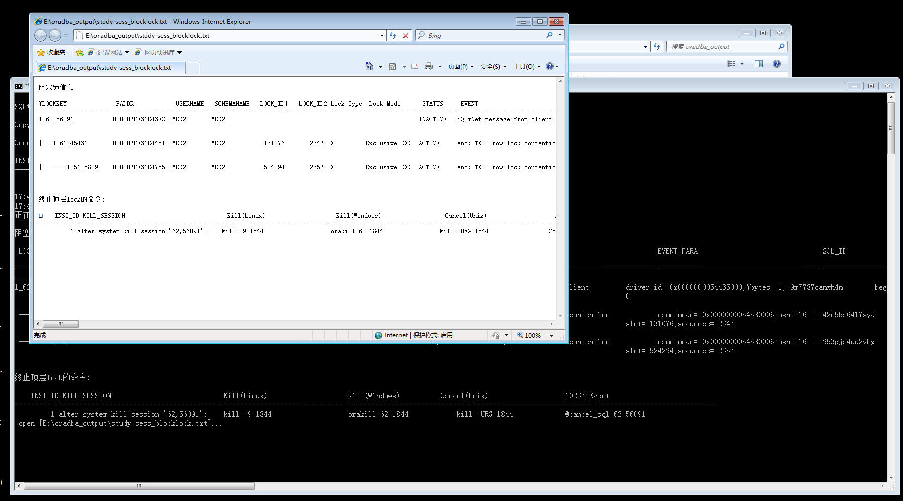
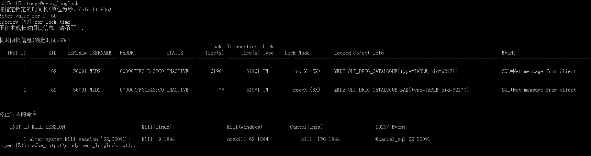
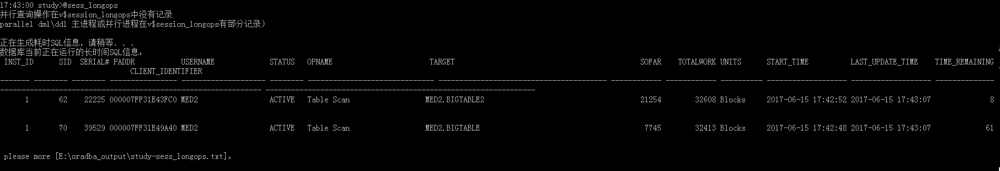
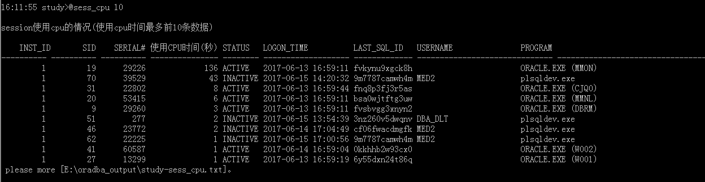
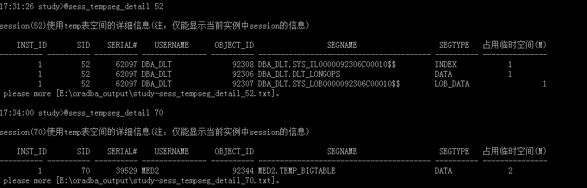
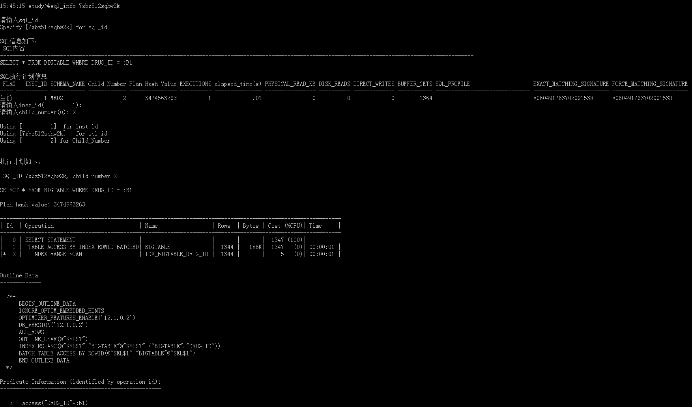
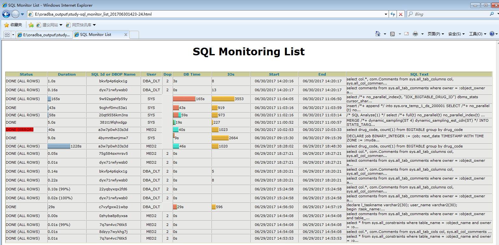
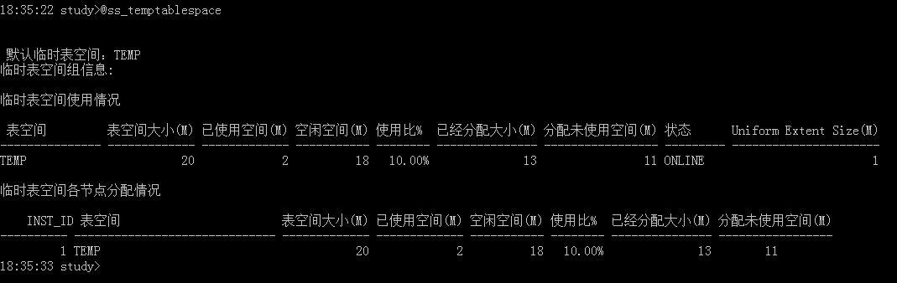
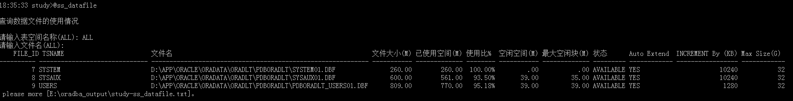

安装监控脚本配置运行环境配置数据库连接信息window操作系统linux|mac操作系统连接数据库事例配置运行时参数session监控Lock监控阻塞Lock长时间未释放的Lock正在运行的长时间SQL信息session使用PGA内存大小session占用undo空间大小session使用cpu时间 session占用临时表空间大小session占用临时表空间详细信息session使用cursor总体情况session整体情况当前等待事件当前非空闲等待事件当前热点块等待事件当前Hight Water等待事件当前指定的等待事件SQL监控和调优分析SQL的执行计划分析SQL运行信息sql profile 固化outline 固化v$sql_plan中的outline固化自定义的 outline固化自定义的 outline2查看sql profile 信息SQL调优 调优sql文本调优v$sql_plan中执行计划SQL ACCESS 优化11g SQL监控SQL监控列表SQL监控报告SQL监控详细信息自动sql调优报告跟踪事件10046trace 10046 event获取跟踪文件tkprof 分析跟踪文件100531050010237 取消正在运行的SQL空间和文件监控表空间使用情况临时表空间使用情况表空间使用情况数据文件使用情况临时表空间文件使用情况联机日志文件信息Table占用空间信息segment对象占用空间情况segment对象空间分析顾问数据文件IO信息统计segment对象IO统计ASM信息内存监控SGAPGA数据库缓冲区(db_buffer)共享池(share_pool)object在buffer中的大小查询结果缓存(11g)工具脚本获取DDL脚本获取全文索引创建脚本获取Object创建脚本获取特定type对象的创建脚本获取schema中所有对象的创建脚本检查index包装系统脚本解密加密包获取脚本
安装监控脚本
安装相关脚本：
ObjPriOnSys.sql ct_dlt_migrateobj_log.sql dlt_sys$migrateobj.plb cr_directory.sql ct_dlt_session_sql.sql dlt_sys$t.pck ct_dlt_access_sql.sql dltInstaller.sql dlt_sys$t.plb ct_dlt_blocklock.sql dlt_sys$m.pck dlt_sys$tr_trace_ddl.sql ct_dlt_longlock.sql dlt_sys$m.plb dlt_sys$tr_trace_servererror.sql ct_dlt_longops.sql dlt_sys$migrateobj.pck
其中
dltInstaller.sql为安装入口脚本。安装脚本将创建一个监控账号，根据提示信息，输入用户名和密码，一键式完成脚本安装。
建议使用独立的监控账号来存放监控脚本，并作为日常维护登录用
在sqlplus中执行dltInstaller.sql
SQL> conn / @localhost:1521/pdboradlt as sysdba 已连接。 SQL> @dltInstaller 创建管理用户 请输入用户名:dba_dlt 请输入密码: 用户已创建。 开始给用户[dba_dlt]授予权限 视图已创建。 同义词已创建。 授权成功。 ... ... 现在以[dba_dlt]用户连接数据库，并创建监控脚本 已连接。 序列已创建。 ... ... 后台脚本安装完成!
配置运行环境
配置数据库连接信息
window操作系统
用
dltSqlplus.bat登录要监控的数据库
打开dltSqlplus.bat文件，大致内容如下：
echo 1:学习(self)echo 2:echo 3:echo q:退出choice /C 123456789Q /M "请选择:" /T 999 /D 2 /Nset nls_lang=AMERICAN_AMERICA.ZHS16GBKclsset system=windowif %ERRORLEVEL%==1 ( title "学习(self)" set username=dba_dlt set password=******** set service="(DESCRIPTION = (ADDRESS = (PROTOCOL = TCP)(HOST = 10.10.10.128)(PORT = 1521)) (CONNECT_DATA = (SERVER = DEDICATED) (SERVICE_NAME = pdboradlt)))" set prompt=study rem sqlplus /nolog @LogonDB !username! !password! !service! !prompt! !system!)if %ERRORLEVEL%==2 ( title "" set username= set password= set service= set prompt=)参数说明:
username:安装脚本时创建的用户名password:安装脚本时输入的密码service:连接数据库服务字符串prompt:sqlpuls提示字符串；同时作为输出结果文件名的前缀system:操作系统平台，默认window
linux|mac操作系统
用
dltSqlplus.sh登录要监控的数据库
打开dltSqlplus.sh文件，大致内容如下：
do case $REPLY in 1) username=dba_dlt password=dlt760416 service="(DESCRIPTION = (ADDRESS = (PROTOCOL = TCP)(HOST = 192.168.1.105)(PORT = 1521)) (CONNECT_DATA = (SERVER = DEDICATED) (SERVICE_NAME = pdboradlt)))" prompt=study system=mac break ;; 2) username= password= service= prompt= system= break ;; 5) break ;; *) echo invalid option;; esacdone参数
system可以配置mac|linux注：这五个配置参数都必须有值
连接数据库事例
E:\oracle_dba\sale\admin>dltSqlplus.bat
1:学习(self)
2:
3:
q:退出
请选择:1
SQL*Plus: Release 12.1.0.2.0 Production on Tue Jun 13 17:38:48 2017
Copyright (c) 1982, 2014, Oracle. All rights reserved.
Connected.
INSTANCE_NUMBER
---------------
1
17:38:49 study>
17:39:26 study>show user
USER is "DBA_DLT"注：
INSTANCE_NUMBER为登陆数据库的实例id(instance_id)
配置运行时参数
打开define_global_var.sql文件，有如下内容：
select case when '&system' in ('mac','linux') then '/Users/denglt/oradba_output/' else 'E:\oradba_output\' end script_output_dir , case when '&system' in ('mac','linux') then '/Applications/Google\ Chrome.app/Contents/MacOS/Google\ Chrome' else '"C:\Program Files (x86)\Internet Explorer\iexplore.exe"' end open_file_text , case when '&system' in ('mac','linux') then '/Applications/Google\ Chrome.app/Contents/MacOS/Google\ Chrome' else '"C:\Program Files (x86)\Internet Explorer\iexplore.exe"' end open_file_html, case when '&system' in ('mac','linux') then 'mv' else 'move' end cmd_move_file from dual;rem 是否使用工具打开文件(1:使用；其他不使用）define flag_use_opentool =1ALTER SESSION SET TIME_ZONE = '+8:00';alter session set nls_date_format='yyyy-mm-dd hh24:mi:ss';alter session set nls_timestamp_format = 'yyyy-mm-dd hh24:mi:ss';alter session set nls_timestamp_tz_format = 'YYYY-MM-DD HH:MI:SS.FF TZH:TZM';script_output_dir:脚本输出结果文件的存放目录open_file_text:打开文本文件的工具open_file_html:打开html文件的工具cmd_move_file:操作系统移动文件的命令flag_use_opentool:是否使用工具打开输出文件
session监控
相关脚本
sess_blocklock.sql sess_cursor.sql sess_longops.sql sess_tempseg_detail.sql sess_info.sql sess_pga.sql sess_undo.sql sess_cpu.sql sess_longlock.sql sess_tempseg.sql
Lock监控
Lock在数据库中无处不在，监控当前数据库中Lock的运行情况，对发现问题、排除故障十分有用
以下脚本可以监控RAC环境下的Lock
阻塞Lock
sess_blocklock.sql脚本查看阻塞Lock信息
17:43:49 study>@sess_blocklock 正在生成阻塞锁信息，请稍等．．．

脚本自动用open_file_text配置的工具打开阻塞锁日志，该文件保存在script_output_dir配置的文件夹中

- 以树状格式展示lock的阻塞关系
LOCKKEY格式: INSTANCE_ID+SID+SERIAL#- 如果lock为
enq: TX - row lock contention字段REQUEST_DATA_QUERYSQL显示查询行锁数据的sqlselect * from MED2.OLT_DRUG_CATALOGUE where rowid='AAAWfZAAJAAAAFYAAA'
详细输出内容见：阻塞锁日志
长时间未释放的Lock
sess_longlock.sql查看长时间占用资源的Lock，可以指定时长(单位秒)，默认60sUsage：@sess_longlock
20:05:47 study>@sess_longlock 请指定锁定的时间长(单位为秒，default 60s) Enter value for 1: 60 Specify [60] for lock time 正在生成长时间锁信息，请稍等．．．

Lock Time(s):Lock时长，单位秒
Transaction Time(s):事务时长，单位秒
Locked Object Info:Lock定对象信息 `
详细输出内容：长锁日志
在输出文件最后为释放Lock的操作指令：
INST_ID:Lock产生的数据库instace_id
KILL_SESSION:alter system kill session '62,56091';
Kill(Linux):kill -9 1844
Kill(Windows):orakill 62 1844
Cancel(Unix):kill -URG 1844 (仅取消sessoin当前执行的sql)
10237 Event:@cancel_sql 62 56091 (仅取消sessoin当前执行的sql)
正在运行的长时间SQL信息
sess_longops.sql获取数据库当前正在运行的长SQL信息，按照工作量从高到底排序
17:43:00 study>@sess_longops 正在生成耗时SQL信息，请稍等．．．

详细输出内容：长操作sql日志
session使用PGA内存大小
sess_pga.sql计算session使用PGA内存大大小，按照占用大小从高到低排序Usage：@sess_pga.sql
17:34:12 study>@sess_pga 10
当前session使用pga的情况(占用pga内存最多前10条数据)
INST_ID SID SERIAL# SPID PGA_USED_MEM PGA_ALLOC_MEM PGA_FREEABLE_MEM PGA_MAX_MEM STATUS SQL_ID
---------- ---------- ---------- ------------------------ ------------ ------------- ---------------- ----------- -------- ------------- -
1 12 26310 1640 7 21 13 21 ACTIVE
1 19 29226 528 3 13 10 15 ACTIVE cgtc5gb7c4g07
详细输出内容：session使用PGA日志
session占用undo空间大小
sess_undo.sql计算session占用undo空间的大小，按照占用大小从高到低排序Usage: @sess_undo
18:07:42 study>@sess_undo 10
当前事务使用UNDO表空间的情况(占用undo空间最多前10条数据)
INST_ID 表空间名称 回滚段名称 事物占用undo块数量 事物占用undo空间(M)
---------- -------------------- --------------------------- ------------------ ----------------
1 UNDOTBS1 _SYSSMU5_3484600714$ 12971 101.34
1 UNDOTBS1 _SYSSMU6_3822221795$ 363 2.84
open [E:\oradba_output\study-sess_undo.txt]...
详细输出内容：session占用undo空间大小日志
session使用cpu时间
sess_cpu.sql获取使用cpu时间最多的session，按照使用大小从高到低排序Usage: @sess_cpu
16:11:55 study>@sess_cpu 10
session使用cpu的情况(使用cpu时间最多前10条数据)
INST_ID SID SERIAL# 使用CPU时间(秒) STATUS LOGON_TIME LAST_SQL_ID USERNAME PROGRAM
---------- ---------- ---------- --------------- -------- ------------------- ------------- ------------------------------ ----------------------
1 19 29226 136 ACTIVE 2017-06-13 16:59:11 fvkynu9xgck8h ORACLE.EXE (MMON)
1 70 39529 43 INACTIVE 2017-06-15 14:20:32 9m7787camwh4m MED2 plsqldev.exe
1 31 22802 8 ACTIVE 2017-06-13 16:59:44 fnq8p3fj3r5as ORACLE.EXE (CJQ0)
1 20 53415 6 ACTIVE 2017-06-13 16:59:11 bsa0wjtftg3uw ORACLE.EXE (MMNL)
1 9 29260 3 ACTIVE 2017-06-13 16:59:11 fvsbvgg3xnyn2 ORACLE.EXE (DBRM)
1 51 277 2 INACTIVE 2017-06-15 13:54:39 3nz260v5dwqnv DBA_DLT plsqldev.exe
1 46 23772 2 INACTIVE 2017-06-14 17:04:49 cf06fwacdmgfk MED2 plsqldev.exe
1 62 22225 1 INACTIVE 2017-06-15 17:00:56 9m7787camwh4m MED2 plsqldev.exe
详细输出内容：session使用cpu日志
session占用临时表空间大小
sess_tempseg.sql计算session占用temp tablespace的大小，按照占用大小从高到低排序Usage: @sess_tempseg
17:27:11 study>@sess_tempseg 10
session使用temp表空间的情况(占用临时表空间最多前10条数据)
INST_ID TABLESPACE 占用临时空间(M) SID SERIAL# SQL_ID STATUS USERNAME PROGRAM MACHINE
---------- -------------------- --------------- ---------- ---------- ------------- -------- --------------- ------------------------------------------------ ---------------------------------------
1 TEMP 3 52 62097 cba6z16y1maqb ACTIVE DBA_DLT sqlplus.exe WORKGROUP\DENGLT-PC
1 TEMP 2 70 39529 9m7787camwh4m INACTIVE MED2 plsqldev.exe WORKGROUP\DENGLT-PC
注：这儿的sql_id可能并不是使用临时段的SQL.
please more [E:\oradba_output\study-sess_tempseg.txt]。
session占用临时表空间详细信息
sess_tempseg_detail.sql获取指定sid(session id) session占用temp tablespacede信息Usage: @sess_tempseg_detail

session使用cursor总体情况
sess_cursor.sql查看session使用cursor总体情况
17:33:59 study>@sess_cursor
系统当前的opened cursors数量
INST_ID VALUE
---------- ----------
1 37
Tuning OPEN_CURSORS
INST_ID 参数名称 参数值
---------- ------------------------------ ------------------------------
1 open_cursors 300
程序使用cursor的情况统计
.....
.....
详细输出内容：session使用cursor总体情况日志
session整体情况
sess_info.sql综合上面的监控，直接生成阻塞lock、操过60s的长lock、长操作SQL、占用undo前10、占用cpu前10、占用临时表空间前10等session信息。
当前等待事件
相关脚本（脚本在文件夹event）
latch_child.sql latch_obj.sql se_hot_block.sql se_hw.sql se_noidle.sql se_wait.sql
当前非空闲等待事件
se_noidle.sql:
18:29:19 study>@event/se_noidle
系统当前非空闲等待事件
INST_ID SID SERIAL# USERNAME STATE SQL_ID EVENT STATUS SEC_IN_WAIT P1 P2
---------- ------- ---------- ------------------------------ ------- ------------- ---------------------------------------- -------- ----------- ------------------------------ -------------------
1 67 18562 DBA_DLT WAITING gvhhm0q3n6n2k db file sequential read ACTIVE 0 file#= 7 block#= 6398
1 85 63 MED2 WAITING 8ua420838c000 db file sequential read ACTIVE 0 file#= 9 block#= 102660
1 76 30753 DBA_DLT WORKING 9wnakcpz3pbz4 On CPU / runqueue--SQL*Net message to ACTIVE 0 driver id= 0x0000000054435000 #bytes= 1
client
1 50 10999 MED2 WORKING 93vky9v64sc72 On CPU / runqueue--db file scattered ACTIVE 1 file#= 9 block#= 97536
read
please more [E:\oradba_output\study-se_noidle.txt]。
可以立马使用
@sql_info gvhhm0q3n6n2k分析等待事情执行的sql
当前热点块等待事件
11:30:39 study>@event/se_hot_block 当前系统中［latch: cache buffers chains］等待事件信息 Specify "latch: cache buffers chains" for 等待事件名称的关键字 查看进一步信息，请输入上面的latch address (0): Specify [0] for latch addr child latch的统计信息 Specify [0] for latch addr latch管理的内存中存储的数据内容 [status]说明： free - Not currently in use xcur - Exclusive scur - Shared current cr - Consistent read read - Being read from disk mrec - In media recovery mode irec - In instance recovery mode 仅有当前instance的数据 please more [E:\oradba_output\study-se_hot_block.txt]。
se_hot_block.sql会调用latch_child.sql获取child latch的统计信息，调用latch_obj.sql获取latch管理的数据对象。由于当前系统没有热点块等待，所以上面没有latch的输出
当前Hight Water等待事件
se_hw.sq:系统当前HW等待事件争用的对象信息
11:31:26 study>@event/se_hw 系统当前HW等待事件争用的对象信息 please more [E:\oradba_output\study-se_hw.txt]。
当前指定的等待事件
11:55:12 study>@event/se_wait 'cpu quantum'
Specify "cpu quantum" for 等待事件名称的关键字
INST_ID SID USERNAME STATE SQL_ID EVENT SEC_IN_WAIT P1 P2 P3
---------- ------- ------------------------------ ------- ------------- ---------------------------------------- ----------- ------------------------------ ------------------------------ ------------------------------ -------
1 44 WAITING 0shtmwrnbv2q1 Scheduler:resmgr:cpu quantum 3 location= 3 consumer group id= 17323 = 0
1 73 MED2 WORKING 7qncu1mqrfy4u On CPU / runqueue--resmgr:cpu quantum 6 location= 3 consumer group id= 17323 = 0
1 66 MED2 WORKING On CPU / runqueue--resmgr:cpu quantum 6 location= 3 consumer group id= 17323 = 0SQL监控和调优
相关脚本
explain.sql sql_info.sql create_sql_profile.sql create_sql_profile_sqlid.sql create_sql_profile_sqltext.sql sql_profile_info.sql sql_tuning_sqltext.sql sqltune_sqlid.sql sqlAccess_sqlSet.sql sqlAccess_sqlid.sql sqlAccess_sqltext.sql 11g/rpt_sml.sql 11g/rpt_sml2.sql 11g/rpt_sm.sql 11g/rpt_sd.sql
工具脚本 （一般不直接使用）
xplain.sql readfile.sql output_sqlplan_info.sql xplan_cursor_noprompt.sql xplan_cursor.sql xplan_lastsql.sql tuningsql.sql tuningsql2.sql rpt_sql_tuning.sql access_sql.sql access_sqlset.sql rpt_sql_access.sql
分析SQL的执行计划
explain.sql按照BASIC|TYPICAL|ALL|OUTLINE分析SQL的执行计划。Usage:把需要分析的SQL语句(如：使用了hint的sql)存放在
dlt_sqltext.txt文件中，运行@explain根据提示输入
18:01:34 study>@explain
SQL执行计划类型[BASIC|TYPICAL|ALL|OUTLINE]
请输入要查看的类型(TYPICAL):
执行计划如下：
Plan hash value: 3474563263
------------------------------------------------------------------------------------------------------------
| Id | Operation | Name | Rows | Bytes | Cost (%CPU)| Time |
------------------------------------------------------------------------------------------------------------
| 0 | SELECT STATEMENT | | 1344 | 181K| 1347 (0)| 00:00:01 |
| 1 | TABLE ACCESS BY INDEX ROWID BATCHED| BIGTABLE | 1344 | 181K| 1347 (0)| 00:00:01 |
|* 2 | INDEX RANGE SCAN | IDX_BIGTABLE_DRUG_ID | 1344 | | 5 (0)| 00:00:01 |
------------------------------------------------------------------------------------------------------------
Predicate Information (identified by operation id):
---------------------------------------------------
2 - access("DRUG_ID"=17529)
please more [E:\oradba_output\study-xplain.txt]。
18:02:01 study>@explain
SQL执行计划类型[BASIC|TYPICAL|ALL|OUTLINE]
请输入要查看的类型(TYPICAL): ALL
执行计划如下：
Plan hash value: 3474563263
------------------------------------------------------------------------------------------------------------
| Id | Operation | Name | Rows | Bytes | Cost (%CPU)| Time |
------------------------------------------------------------------------------------------------------------
| 0 | SELECT STATEMENT | | 1344 | 181K| 1347 (0)| 00:00:01 |
| 1 | TABLE ACCESS BY INDEX ROWID BATCHED| BIGTABLE | 1344 | 181K| 1347 (0)| 00:00:01 |
|* 2 | INDEX RANGE SCAN | IDX_BIGTABLE_DRUG_ID | 1344 | | 5 (0)| 00:00:01 |
------------------------------------------------------------------------------------------------------------
Query Block Name / Object Alias (identified by operation id):
-------------------------------------------------------------
1 - SEL$1 / BIGTABLE@SEL$1
2 - SEL$1 / BIGTABLE@SEL$1
Predicate Information (identified by operation id):
---------------------------------------------------
2 - access("DRUG_ID"=17529)
Column Projection Information (identified by operation id):
-----------------------------------------------------------
1 - "DRUG_ID"[NUMBER,22], "BIGTABLE"."DRUG_CODE"[VARCHAR2,20],
"BIGTABLE"."DRUG_CHEM_NAME"[VARCHAR2,100], "BIGTABLE"."DRUG_PINYIN"[VARCHAR2,100],
"BIGTABLE"."DRUG_TRADE_NAME"[VARCHAR2,100], "BIGTABLE"."DRUG_SPEC"[VARCHAR2,50],
"BIGTABLE"."DRUG_DOSE"[VARCHAR2,20], "BIGTABLE"."DRUG_MANUFATURER"[VARCHAR2,100],
"BIGTABLE"."DRUG_LICENSE_NO"[VARCHAR2,50], "BIGTABLE"."DRUG_SOURCE_TYPE"[NUMBER,22],
"BIGTABLE"."DRUG_PACKING_UNIT"[VARCHAR2,20], "BIGTABLE"."DRUG_DOSAGE_UNIT"[VARCHAR2,20],
"BIGTABLE"."DRUG_DOSAGE_NUM"[NUMBER,22], "BIGTABLE"."DRUG_APPERANCE_NUM"[NUMBER,22],
"BIGTABLE"."DRUG_APPERANCE_UNIT"[VARCHAR2,255], "BIGTABLE"."DRUG_PHOTO"[LOB,4000],
"BIGTABLE"."DRUG_TRADE_CODE"[VARCHAR2,255], "BIGTABLE"."DRUG_SPEC_TYPE"[NUMBER,22],
"BIGTABLE"."STATUS"[NUMBER,22], "BIGTABLE"."REMARK"[VARCHAR2,255],
"BIGTABLE"."DRUG_WB"[VARCHAR2,100], "BIGTABLE"."TEXT"[LOB,4000]
2 - "BIGTABLE".ROWID[ROWID,10], "DRUG_ID"[NUMBER,22]
please more [E:\oradba_output\study-xplain.txt]。
18:02:17 study>@explain
SQL执行计划类型[BASIC|TYPICAL|ALL|OUTLINE]
请输入要查看的类型(TYPICAL): outline
执行计划如下：
Plan hash value: 3474563263
------------------------------------------------------------------------------------------------------------
| Id | Operation | Name | Rows | Bytes | Cost (%CPU)| Time |
------------------------------------------------------------------------------------------------------------
| 0 | SELECT STATEMENT | | 1344 | 181K| 1347 (0)| 00:00:01 |
| 1 | TABLE ACCESS BY INDEX ROWID BATCHED| BIGTABLE | 1344 | 181K| 1347 (0)| 00:00:01 |
|* 2 | INDEX RANGE SCAN | IDX_BIGTABLE_DRUG_ID | 1344 | | 5 (0)| 00:00:01 |
------------------------------------------------------------------------------------------------------------
Outline Data
-------------
/*+
BEGIN_OUTLINE_DATA
BATCH_TABLE_ACCESS_BY_ROWID(@"SEL$1" "BIGTABLE"@"SEL$1")
INDEX_RS_ASC(@"SEL$1" "BIGTABLE"@"SEL$1" ("BIGTABLE"."DRUG_ID"))
OUTLINE_LEAF(@"SEL$1")
ALL_ROWS
DB_VERSION('12.1.0.2')
OPTIMIZER_FEATURES_ENABLE('12.1.0.2')
IGNORE_OPTIM_EMBEDDED_HINTS
END_OUTLINE_DATA
*/
Predicate Information (identified by operation id):
---------------------------------------------------
2 - access("DRUG_ID"=17529)
please more [E:\oradba_output\study-xplain.txt]。详细输出内容：SQL的执行计划日志
分析SQL运行信息
sql_info.sql分析指定的sql_id运行信息(包括执行成本、执行计划、绑定参数等)Usage：@sql_info
15:38:17 study>@sql_info 7xbz512sqhw2k
more请输入sql_id
Specify [7xbz512sqhw2k] for sql_id
SQL信息如下：
SQL内容
----------------------------------------------------------------------------------------------
SELECT * FROM BIGTABLE WHERE DRUG_ID = :B1
SQL执行计划信息
FLAG INST_ID SCHEMA_NAME Child Number Plan Hash Value EXECUTIONS elapsed_time(s) PHYSICAL_READ_KB DISK_READS DIRECT_WRITES BUFFER_GETS SQL_PROFILE EXACT_MATCHING_SIGNATURE FORCE_MATCHING_SIGNATURE
---- ---------- ----------- ------------ --------------- ---------- --------------- ---------------- ---------- ------------- ----------- ------------------------------ ------------------------ ------------------------
当前 1 MED2 2 3474563263 1 .01 0 0 0 1364 8060491763702991538 8060491763702991538
请输入inst_id( 1):
请输入child_number(0): 2
Using [ 1] for inst_id
Using [7xbz512sqhw2k] for sql_id
Using [ 2] for Child_Number
执行计划如下：
SQL_ID 7xbz512sqhw2k, child number 2
-------------------------------------
SELECT * FROM BIGTABLE WHERE DRUG_ID = :B1
Plan hash value: 3474563263
------------------------------------------------------------------------------------------------------------
| Id | Operation | Name | Rows | Bytes | Cost (%CPU)| Time |
------------------------------------------------------------------------------------------------------------
| 0 | SELECT STATEMENT | | | | 1347 (100)| |
| 1 | TABLE ACCESS BY INDEX ROWID BATCHED| BIGTABLE | 1344 | 186K| 1347 (0)| 00:00:01 |
|* 2 | INDEX RANGE SCAN | IDX_BIGTABLE_DRUG_ID | 1344 | | 5 (0)| 00:00:01 |
------------------------------------------------------------------------------------------------------------
Outline Data
-------------
/*+
BEGIN_OUTLINE_DATA
IGNORE_OPTIM_EMBEDDED_HINTS
OPTIMIZER_FEATURES_ENABLE('12.1.0.2')
DB_VERSION('12.1.0.2')
ALL_ROWS
OUTLINE_LEAF(@"SEL$1")
INDEX_RS_ASC(@"SEL$1" "BIGTABLE"@"SEL$1" ("BIGTABLE"."DRUG_ID"))
BATCH_TABLE_ACCESS_BY_ROWID(@"SEL$1" "BIGTABLE"@"SEL$1")
END_OUTLINE_DATA
*/
Predicate Information (identified by operation id):
---------------------------------------------------
2 - access("DRUG_ID"=:B1)
SQL参数信息如下：
参数名称 参数类型 是否捕获 参数值 捕获时间
---------------------------- --------------------- ---------- ------------ --------------------
:B1 NUMBER YES 17530 2017-06-27 15:38:02
please more [E:\oradba_output\study-sql_info_7xbz512sqhw2k.txt]。
详细输出内容：分析SQL运行信息日志
sql profile 固化outline
相关脚本
create_sql_profile.sql create_sql_profile_sqlid.sql create_sql_profile_sqltext.sql sql_profile_info.sql
固化v$sql_plan中的outline
create_sql_profile.sql通过sql_id和child_number固化v$sql_plan中的执行计划
16:45:07 study>@create_sql_profile
Enter value for sql_id: 7xbz512sqhw2k
Enter value for child_no (0): 2
Enter value for profile_name (PROF_sqlid_planhash):
Enter value for category (DEFAULT):
Enter value for force_matching (TRUE):
SQL Profile PROF_7xbz512sqhw2k_3474563263 created.
SQL PROFILE的相关信息如下:
NAME : PROF_7xbz512sqhw2k_3474563263
CATEGORY : DEFAULT
SIGNATURE : 8060491763702991538
SQL_TEXT : SELECT * FROM BIGTABLE WHERE DRUG_ID = :B1
CREATED : 2017-06-27 16:46:17
LAST_MODIFIED : 2017-06-27 16:46:17
DESCRIPTION :
TYPE : MANUAL
STATUS : ENABLED
FORCE_MATCHING : YES
TASK_ID :
TASK_EXEC_NAME :
TASK_OBJ_ID :
TASK_FND_ID :
TASK_REC_ID :
TASK_CON_DBID :
-----------------
SQL PROFFILE的属性如下:
-------------------------------------
IGNORE_OPTIM_EMBEDDED_HINTS
OPTIMIZER_FEATURES_ENABLE('12.1.0.2')
DB_VERSION('12.1.0.2')
ALL_ROWS
OUTLINE_LEAF(@"SEL$1")
INDEX_RS_ASC(@"SEL$1" "BIGTABLE"@"SEL$1" ("BIGTABLE"."DRUG_ID"))
BATCH_TABLE_ACCESS_BY_ROWID(@"SEL$1" "BIGTABLE"@"SEL$1")
请使用下面 SQL删除sql profile的相关信息
exec dbms_sqltune.drop_sql_profile('PROF_7xbz512sqhw2k_3474563263');固化自定义的 outline
create_sql_profile_sqlid.sql固化自定义的outline。通过sql_id指定需要固化的sqlUsage:把outline的内容放在
dlt_outline.txt文件中，运行@create_sql_profile_sqlid根据提示输入
如何获取outline
- 自己编写，可以仿照着写，有难度不建议使用
- 在sql中加入hint得到自己需要的执行计划后，使用@explain进行分析获取outline
把select /*+ full(BIGTABLE) */ * from med2.BIGTABLE where drug_id = 17529;放在dlt_sqltext.txt中，运行explain获取outline如下:
BEGIN_OUTLINE_DATA
FULL(@"SEL$1" "BIGTABLE"@"SEL$1")
OUTLINE_LEAF(@"SEL$1")
ALL_ROWS
DB_VERSION('12.1.0.2')
OPTIMIZER_FEATURES_ENABLE('12.1.0.2')
IGNORE_OPTIM_EMBEDDED_HINTS
END_OUTLINE_DATA把上面的outline内容放入到dlt_outline.txt后运行create_sql_profile_sqlid.sql
17:38:54 study>@create_sql_profile_sqlid
输入sql_id: 7xbz512sqhw2k
输入category (DEFAULT):
输入force_matching (true):
SQL PROFILE的相关信息如下:
NAME : DLT_7xbz512sqhw2k_1706271742
CATEGORY : DEFAULT
SIGNATURE : 8060491763702991538
SQL_TEXT : SELECT * FROM BIGTABLE WHERE DRUG_ID = :B1
CREATED : 2017-06-27 16:46:17
LAST_MODIFIED : 2017-06-27 17:42:51
DESCRIPTION : dlt create profiles
TYPE : MANUAL
STATUS : ENABLED
FORCE_MATCHING : YES
TASK_ID :
TASK_EXEC_NAME :
TASK_OBJ_ID :
TASK_FND_ID :
TASK_REC_ID :
TASK_CON_DBID :
-----------------
SQL PROFFILE的属性如下:
-------------------------------------
BEGIN_OUTLINE_DATA
FULL(@"SEL$1" "BIGTABLE"@"SEL$1")
OUTLINE_LEAF(@"SEL$1")
ALL_ROWS
DB_VERSION('12.1.0.2')
OPTIMIZER_FEATURES_ENABLE('12.1.0.2')
IGNORE_OPTIM_EMBEDDED_HINTS
END_OUTLINE_DATA
请使用下面 SQL删除sql profile的相关信息
exec dbms_sqltune.drop_sql_profile('DLT_7xbz512sqhw2k_1706271742');
please more [E:\oradba_output\study-create_sql_profile_hint2.log]。
固化自定义的 outline2
create_sql_profile_sqltext.sql固化自定义的outline。执行步骤:
- 把outline的内容放在
dlt_outline.txt文件中- 把sql文本放在
dlt_sqltext.txt文件中- 最后执行
create_sql_profile_sqltext.sql
22:24:02 study>@create_sql_profile_sqltext
输入category (DEFAULT):
输入force_matching (true):
SQL PROFILE的相关信息如下:
NAME : DLT_201706282224
CATEGORY : DEFAULT
SIGNATURE : 9466144111055232050
SQL_TEXT : select * from BIGTABLE where drug_id = 175291
CREATED : 2017-06-28 22:24:56
LAST_MODIFIED : 2017-06-28 22:24:56
DESCRIPTION : dlt create profiles
TYPE : MANUAL
STATUS : ENABLED
FORCE_MATCHING : YES
TASK_ID :
TASK_EXEC_NAME :
TASK_OBJ_ID :
TASK_FND_ID :
TASK_REC_ID :
TASK_CON_DBID :
-----------------
SQL PROFFILE的属性如下:
-------------------------------------
BEGIN_OUTLINE_DATA
FULL(@"SEL$1" "BIGTABLE"@"SEL$1")
OUTLINE_LEAF(@"SEL$1")
ALL_ROWS
DB_VERSION('12.1.0.2')
OPTIMIZER_FEATURES_ENABLE('12.1.0.2')
IGNORE_OPTIM_EMBEDDED_HINTS
END_OUTLINE_DATA
请使用下面 SQL删除sql profile的相关信息
exec dbms_sqltune.drop_sql_profile('DLT_201706282224');
please more [E:\oradba_output\study-create_sql_profile_hint.log]。
这个方式很少用，一般用
create_sql_profile_sqlid
查看sql profile 信息
sql_profile_info.sql:查看详细的sql profile信息Usage：@sql_profile_info
22:29:29 study>@sql_profile_info DLT_201706282224
SQL PROFILE的相关信息如下:
NAME : DLT_201706282224
CATEGORY : DEFAULT
SIGNATURE : 9466144111055232050
SQL_TEXT : select * from BIGTABLE where drug_id = 175291
CREATED : 2017-06-28 22:24:56
LAST_MODIFIED : 2017-06-28 22:24:56
DESCRIPTION : dlt create profiles
TYPE : MANUAL
STATUS : ENABLED
FORCE_MATCHING : YES
TASK_ID :
TASK_EXEC_NAME :
TASK_OBJ_ID :
TASK_FND_ID :
TASK_REC_ID :
TASK_CON_DBID :
-----------------
SQL PROFFILE的属性如下:
-------------------------------------
BEGIN_OUTLINE_DATA
FULL(@"SEL$1" "BIGTABLE"@"SEL$1")
OUTLINE_LEAF(@"SEL$1")
ALL_ROWS
DB_VERSION('12.1.0.2')
OPTIMIZER_FEATURES_ENABLE('12.1.0.2')
IGNORE_OPTIM_EMBEDDED_HINTS
END_OUTLINE_DATA
请使用下面 SQL删除sql profile的相关信息
exec dbms_sqltune.drop_sql_profile('DLT_201706282224');通过explain验证sql profile生效
22:43:01 study>alter session set current_schema = med2;
Session altered.
22:43:08 study>@explain
SQL执行计划类型[BASIC|TYPICAL|ALL|OUTLINE]
请输入要查看的类型(TYPICAL): outline
执行计划如下：
Plan hash value: 2178901462
------------------------------------------------------------------------------
| Id | Operation | Name | Rows | Bytes | Cost (%CPU)| Time |
------------------------------------------------------------------------------
| 0 | SELECT STATEMENT | | 1 | 142 | 17641 (1)| 00:00:01 |
|* 1 | TABLE ACCESS FULL| BIGTABLE | 1 | 142 | 17641 (1)| 00:00:01 |
------------------------------------------------------------------------------
Outline Data
-------------
/*+
BEGIN_OUTLINE_DATA
FULL(@"SEL$1" "BIGTABLE"@"SEL$1")
OUTLINE_LEAF(@"SEL$1")
ALL_ROWS
DB_VERSION('12.1.0.2')
OPTIMIZER_FEATURES_ENABLE('12.1.0.2')
IGNORE_OPTIM_EMBEDDED_HINTS
END_OUTLINE_DATA
*/
Predicate Information (identified by operation id):
---------------------------------------------------
1 - filter("DRUG_ID"=175291)
Note
-----
- SQL profile "DLT_201706282224" used for this statement
please more [E:\oradba_output\study-xplain.txt]。SQL调优
调优sql文本
sql_tuning_sqltext.sql对指定的sql进行优化Usage：
- 把需要的sql放在
dlt_sqltext.sql文件中- 运行
sql_tuning_sqltext.sql,根据提示输入信息，获取优化建议
14:57:38 study>@sqltune_sqltext
"请执行脚本前，把要分析的SQL语句存放在[dlt_sqltext.txt]文件中。"
请输入SQL的Schema Name(USER):med2
正在tuning sql,请耐心等候．．．
任务[DLT_SQLTUNING_201706291516]分析完成。
优化建议结果如下:
--------------------------------------------------------------------------------------------------
GENERAL INFORMATION SECTION
-------------------------------------------------------------------------------
Tuning Task Name : DLT_SQLTUNING_201706291516
Tuning Task Owner : DBA_DLT
Workload Type : Single SQL Statement
Scope : COMPREHENSIVE
Time Limit(seconds): 9000
Completion Status : COMPLETED
Started at : 06/29/2017 15:16:25
Completed at : 06/29/2017 15:16:25
-------------------------------------------------------------------------------
Schema Name : MED2
Container Name: PDBORADLT
SQL ID : 688mgaz3164p2
SQL Text : select * from BIGTABLE where drug_code = '0020020003'
-------------------------------------------------------------------------------
FINDINGS SECTION (1 finding)
-------------------------------------------------------------------------------
1- Index Finding (see explain plans section below)
--------------------------------------------------
The execution plan of this statement can be improved by creating one or more
indices.
Recommendation (estimated benefit: 99.39%)
------------------------------------------
- Consider running the Access Advisor to improve the physical schema design
or creating the recommended index.
create index MED2.IDX$$_004A0001 on MED2.BIGTABLE("DRUG_CODE");
Rationale
---------
Creating the recommended indices significantly improves the execution plan
of this statement. However, it might be preferable to run "Access Advisor"
using a representative SQL workload as opposed to a single statement. This
will allow to get comprehensive index recommendations which takes into
account index maintenance overhead and additional space consumption.
-------------------------------------------------------------------------------
EXPLAIN PLANS SECTION
-------------------------------------------------------------------------------
1- Original
-----------
Plan hash value: 2178901462
------------------------------------------------------------------------------
| Id | Operation | Name | Rows | Bytes | Cost (%CPU)| Time |
------------------------------------------------------------------------------
| 0 | SELECT STATEMENT | | 1344 | 186K| 17641 (1)| 00:00:01 |
|* 1 | TABLE ACCESS FULL| BIGTABLE | 1344 | 186K| 17641 (1)| 00:00:01 |
------------------------------------------------------------------------------
Predicate Information (identified by operation id):
---------------------------------------------------
1 - filter("DRUG_CODE"='0020020003')
2- Using New Indices
--------------------
Plan hash value: 1156591996
------------------------------------------------------------------------------------------------------
| Id | Operation | Name | Rows | Bytes | Cost (%CPU)| Time |
------------------------------------------------------------------------------------------------------
| 0 | SELECT STATEMENT | | 1344 | 186K| 106 (0)| 00:00:01 |
| 1 | TABLE ACCESS BY INDEX ROWID BATCHED| BIGTABLE | 1344 | 186K| 106 (0)| 00:00:01 |
|* 2 | INDEX RANGE SCAN | IDX$$_004A0001 | 1344 | | 7 (0)| 00:00:01 |
------------------------------------------------------------------------------------------------------
Predicate Information (identified by operation id):
---------------------------------------------------
2 - access("DRUG_CODE"='0020020003')
-------------------------------------------------------------------------------
please more [E:\oradba_output\study-sql_tuning.txt]。详细输出内容：调优日志
调优v$sql_plan中执行计划
sqltune_sqlid.sql通过sql_id和child_number调优v$sql_plan中的执行计划
15:28:10 study>@sqltune_sqlid 6m0xgkc6rhrf9
请输入sql_id
Specify [6m0xgkc6rhrf9] for sql_id
SQL信息如下：
SQL内容
-----------------------------------------------------------------------------------------------
select * from BIGTABLE where drug_code = '0020020003'
SQL执行计划信息
FLAG INST_ID SCHEMA_NAME Child Number Plan Hash Value EXECUTIONS elapsed_time(s) PHYSICAL_READ_KB DISK_READS DIRECT_WRITES BUFFER_GETS SQL_PROFILE EXACT_MATCHING_SIGNATURE FORCE_MATCHING_SIG
---- ---------- ----------- ------------ --------------- ---------- --------------- ---------------- ---------- ------------- ----------- ------------------------------ ------------------------ ------------------
当前 1 MED2 0 383109577 1 .06 832 104 0 104 11524829442477846980 744521565823620194
当前 1 MED2 1 2178901462 2 .99 19088 2448 0 2387 11524829442477846980 744521565823620194
请输入inst_id( 1):
请输入child_number(0): 1
Using [ 1] for inst_id
Using [6m0xgkc6rhrf9] for sql_id
Using [ 1] for Child_Number
正在tuning sql,请耐心等候．．．
任务[DLT_SQLTUNING_201706291528]分析完成。
优化建议结果如下:
--------------------------------------------------------------------------------------------------
GENERAL INFORMATION SECTION
-------------------------------------------------------------------------------
Tuning Task Name : DLT_SQLTUNING_201706291528
Tuning Task Owner : DBA_DLT
Workload Type : Single SQL Statement
Scope : COMPREHENSIVE
Time Limit(seconds): 9000
Completion Status : COMPLETED
Started at : 06/29/2017 15:28:33
Completed at : 06/29/2017 15:28:35
-------------------------------------------------------------------------------
Schema Name : MED2
Container Name: PDBORADLT
SQL ID : 6m0xgkc6rhrf9
SQL Text : select * from BIGTABLE where drug_code = '0020020003'
-------------------------------------------------------------------------------
FINDINGS SECTION (2 findings)
-------------------------------------------------------------------------------
1- Index Finding (see explain plans section below)
--------------------------------------------------
The execution plan of this statement can be improved by creating one or more
indices.
Recommendation (estimated benefit: 99.39%)
------------------------------------------
- Consider running the Access Advisor to improve the physical schema design
or creating the recommended index.
create index MED2.IDX$$_004B0001 on MED2.BIGTABLE("DRUG_CODE");
Rationale
---------
Creating the recommended indices significantly improves the execution plan
of this statement. However, it might be preferable to run "Access Advisor"
using a representative SQL workload as opposed to a single statement. This
will allow to get comprehensive index recommendations which takes into
account index maintenance overhead and additional space consumption.
2- Alternative Plan Finding
---------------------------
Some alternative execution plans for this statement were found by searching
the system's real-time and historical performance data.
The following table lists these plans ranked by their average elapsed time.
See section "ALTERNATIVE PLANS SECTION" for detailed information on each
plan.
id plan hash last seen elapsed (s) origin note
-- ---------- -------------------- ------------ --------------- ----------------
1 383109577 2017-06-29/14:52:43 0.064 Cursor Cache not reproducible
2 2178901462 2017-06-29/15:23:39 0.993 Cursor Cache original plan
Information
-----------
- All alternative plans other than the Original Plan could not be
reproduced in the current environment.
- The plan with id 1 could not be reproduced because the object
"IDX_BIGTABLE_DRUG_CODE" with type "INDEX" is missing. For this reason,
a SQL plan baseline cannot be created to instruct the Oracle optimizer to
pick this plan in the future.
-------------------------------------------------------------------------------
EXPLAIN PLANS SECTION
-------------------------------------------------------------------------------
1- Original
-----------
Plan hash value: 2178901462
------------------------------------------------------------------------------
| Id | Operation | Name | Rows | Bytes | Cost (%CPU)| Time |
------------------------------------------------------------------------------
| 0 | SELECT STATEMENT | | 1344 | 186K| 17641 (1)| 00:00:01 |
|* 1 | TABLE ACCESS FULL| BIGTABLE | 1344 | 186K| 17641 (1)| 00:00:01 |
------------------------------------------------------------------------------
Predicate Information (identified by operation id):
---------------------------------------------------
1 - filter("DRUG_CODE"='0020020003')
2- Using New Indices
--------------------
Plan hash value: 3881175032
------------------------------------------------------------------------------------------------------
| Id | Operation | Name | Rows | Bytes | Cost (%CPU)| Time |
------------------------------------------------------------------------------------------------------
| 0 | SELECT STATEMENT | | 1344 | 186K| 106 (0)| 00:00:01 |
| 1 | TABLE ACCESS BY INDEX ROWID BATCHED| BIGTABLE | 1344 | 186K| 106 (0)| 00:00:01 |
|* 2 | INDEX RANGE SCAN | IDX$$_004B0001 | 1344 | | 7 (0)| 00:00:01 |
------------------------------------------------------------------------------------------------------
Predicate Information (identified by operation id):
---------------------------------------------------
2 - access("DRUG_CODE"='0020020003')
-------------------------------------------------------------------------------
ALTERNATIVE PLANS SECTION
-------------------------------------------------------------------------------
Plan 1
------
Plan Origin :Cursor Cache
Plan Hash Value :383109577
Executions :1
Elapsed Time :0.064 sec
CPU Time :0.000 sec
Buffer Gets :104
Disk Reads :104
Disk Writes :0
Notes:
1. Statistics shown are averaged over multiple executions.
2. This plan could not be reproduced because the object "IDX_BIGTABLE_DRUG_CODE" with type "INDEX" is missing.
--------------------------------------------------------------------------------------------------------------
| Id | Operation | Name | Rows | Bytes | Cost (%CPU)| Time |
--------------------------------------------------------------------------------------------------------------
| 0 | SELECT STATEMENT | | | | 1317 (100)| |
| 1 | TABLE ACCESS BY INDEX ROWID BATCHED| BIGTABLE | 1344 | 186K| 1317 (0)| 00:00:01 |
| 2 | INDEX RANGE SCAN | IDX_BIGTABLE_DRUG_CODE | 1344 | | 7 (0)| 00:00:01 |
--------------------------------------------------------------------------------------------------------------
Plan 2
------
Plan Origin :Cursor Cache
Plan Hash Value :2178901462
Executions :2
Elapsed Time :0.993 sec
CPU Time :0.008 sec
Buffer Gets :2387
Disk Reads :2448
Disk Writes :0
Notes:
1. Statistics shown are averaged over multiple executions.
2. The plan matches the original plan.
------------------------------------------------------------------------------
| Id | Operation | Name | Rows | Bytes | Cost (%CPU)| Time |
------------------------------------------------------------------------------
| 0 | SELECT STATEMENT | | 1344 | 186K| 17641 (1)| 00:00:01 |
|* 1 | TABLE ACCESS FULL| BIGTABLE | 1344 | 186K| 17641 (1)| 00:00:01 |
------------------------------------------------------------------------------
Predicate Information (identified by operation id):
---------------------------------------------------
1 - filter("DRUG_CODE"='0020020003')
-------------------------------------------------------------------------------
please more [E:\oradba_output\study-sql_tuning2_6m0xgkc6rhrf9.txt]。
15:28:36 study>详细输出内容：调优日志
SQL ACCESS 优化
sqlAccess_sqltext.sql15:28:36 study>@sqlAccess_sqltext "请执行脚本前，把要分析的SQL语句存放在[dlt_sqltext.txt]文件中。" 请输入SQL的Schema Name(USER):med2 正在tuning sql,请耐心等候．．． DECLARE * ERROR at line 1: ORA-00604: error occurred at recursive SQL level 1 ORA-01843: not a valid month ORA-06512: at "SYS.DBMS_ADVISOR", line 201 ORA-06512: at line 142
注：由于该脚本支持10g，不支持11g以后的数据库，所以报错
sqlAccess_sqlid.sql15:57:42 study>@sqlAccess_sqlid 6m0xgkc6rhrf9 请输入sql_id Specify [6m0xgkc6rhrf9] for sql_id 正在tuning sql,请耐心等候．．． DECLARE * ERROR at line 1:
注：由于该脚本支持10g，不支持11g以后的数据库，所以报错
sqlAccess_sqlSet.sql16:02:43 study>@sqlAccess_sqlset 6m0xgkc6rhrf9 请输入sql_id Specify [6m0xgkc6rhrf9] for sql_id 正在tuning sql,请耐心等候．．． 任务[DLT_SQLACCESS_201706291605]分析完成。 任务信息如下: TASK_ID STATUS RECOMMENDATION_COUNT ---------- ---------- -------------------- 85 COMPLETED 1 建议执行以下优化脚本: ----------------------------------------------------------------------------------------- Rem SQL Access Advisor: Version 12.1.0.2.0 - Production Rem Rem Username: DBA_DLT Rem Task: DLT_SQLACCESS_201706291605 Rem Execution date: Rem CREATE BITMAP INDEX "MED2"."BIGTABLE_IDX$$_00550000" ON "MED2"."BIGTABLE" ("DRUG_CODE") COMPUTE STATISTICS; 优化详细信息： USERNAME : MED2 STATEMENT : select * from BIGTABLE where drug_code = '0020020003' Original Cost : 17642 New Cost : 346 Cost Improvenment : 17296 Cost Improvenment(%) : 98.04 Execution Count : 1 RECOMMENDATION : CREATE BITMAP INDEX "MED2"."BIGTABLE_IDX$$_00550000" ON "MED2"."BIGTABLE" ("DRUG_CODE") COMPUTE STATISTICS; ----------------- please more [E:\oradba_output\study-sql_access3_6m0xgkc6rhrf9.txt]。
11g SQL监控
SQL监控列表
rpt_sml.sql查看n小时内的sql 监控列表，生成html文件注：
rpt_sml2.sql生成文本文件(按照ELAPSED TIME倒序排列)
14:23:39 study>@11g/rpt_sml
请输入一个数值，代表n小时内(1): 24
...
...
and constraint_type in ('P', 'U', 'R', 'C')
order by decode(constraint_type, 'P', 0, 'U', 1, 'R', 2, 3), constraint_name
</span>
</a>
</td>
</tr>
</table>
</body>
</html>
please more [E:\oradba_output\study-sql_monitor_list_201706301432-24.html]。
在浏览器中打开:

SQL监控报告
rpt_sm.sql注：输入的sql_id为sql monitoring list 中的sql_id。
19:43:19 study>@11g/rpt_sm
输入sql_id: a3w7p0wh33s3d
<html>
<head>
<meta http-equiv="Content-Type" content="text/html; charset=utf-8"/>
<script language="javascript" type="text/javascript">
<!--
var version = "12.1.0.2.0";
var swf_base_path = "http://download.oracle.com/otn_software/";
document.write('<script language="javascript" type="text/javascript" ' +
'src="' + swf_base_path + 'emviewers/scripts/activeReportInit.js?' +
Math.floor((new Date()).getTime()/(7*24*60*60*1000)) +
'"></' + 'script>');
-->
</script>
</head>
<body onload="sendXML();">
<script type="text/javascript">
writeIframe();
</script>
<script id="fxtmodel" type="text/xml">
<!--FXTMODEL-->
<report db_version="12.1.0.2.0" elapsed_time="2.25" cpu_time="0.69" cpu_cores="1" hyperthread="N" con_id="3" con_name="PDBORADLT" timezone_offset="28800" packs="2" encode="base64" compress="zlib">
<report_id><![CDATA[/orarep/sqlmonitor/main?sql_id=a3w7p0wh33s3d]]></report_id>
eAHtWmtv29gR/Z5fwRIFNgEaS6TeAUWsbDGOUcVOLaWL7WJBUOSVxYYSFZKy4/76
nrkPvkw9Eiy6XwoECHk5M3fuPM8d2Uq/Ru4m3oZZnLgJ28VJpj2yJA3j7VjvXrR1
LX1OAy9jY73db5mjltk2BpoxfNcdvuu0dfuVplmCzd15ibdhGZhpFeskOgxsr/M0
2LWf1p1O2gmsllwVJMu9/4Vlrh/vt5k9GFityoKgCbeQ+ehFbpp5SWZX1TCH79qm
1arR1BjZNqixkfZGiY0owGS1Gs9iYeMHlmnhFipsfYZTjXUDpmEpGYq/DnvFe8qS
0IvGer+DNW6EsV6xglhm35gvDlU3Lj9ViYjv1x8MBqbRF8u7yNu6ay9dj3Wz2+53
TGPUHYhPq30UuZXvfbM7GvU60DhYuvtt+HXP3C18NdbjxJtGGV8HR7aKk4388jH0
kziNV5n2S7gN4qdU+zbsa/3u22UIemmmdZxmkn7q3F7PFm8/XfGYgCn3sAK53zA6
Vku9CMfQm/3RmcJx/FGs+tySNqjlU7FMytqfppd395PpbCEI+Jog2SXxA2LP3kWw
dsAeL2BZq6VWBc0mDvYRhMxa83/MtCl7ZFG8Y4nVkh8EledncKhNJOLY2lvtlj1Z
LflBUEH9x9Bn9i5YwoBBlCGq5ZIkgNPJDRn7hqhJ+fNY/1W3UxYxP9OCZP+AoA/Y
3zQe+q+NN9oqiTfa5c31YnI5c7SHJN7vtOVzQfpKpI4Sq3Is87J9ak/vbh3t9WQ2
0+7vfpm/AalYF+okbJWwdC3TzOxRmJdXBNUqTOBN9SULYfIXuWYiRRvohIDIO87P
S4bVekkm2IN94nHrG6Y5tFr5q/ga76BR+B/EFNs+isMjyHjN0UQsk4sekZsqSbll
dRtpzqkaeeCbhPn7xF1F3kOq2+1jxCQmiljkevssDuLdueRBQCU2YLrNtt4yYiiC
hzXKNwFXsInO3oM9JAw7nHcACJYaBWF6vkpUsPbkIviAc+l2luwp1aj0Nxo4P87G
++YGUknk/RkcqFLJM3hW3j7K3O+wt2A83+IPnus9wHwPaHOuKPW6bY7aQ6Ov/f3y
mK5ZnKEv+bu9SK16sFmtF1FrtcQGZCyLkjTVsucdKrHswap60icZ1yzydikLXMpI
3e72DVTyEXKYSITNuSBJTcoISnNomD3EQzOdqMix++SFmWQwhoNuZ3SIIc7WSL4S
ebfXH3Z77f4hBr7DimW+LDywDhzfrM1yv1pBOposkrDf7fXQBZopEbBfkLNeAEKj
bR48H5GA7us5ZMvnjIGuZw4Hxmg4KGkptOCAxuL1Jcye3dTb7JDF0vZqWfNR2NKx
frXbw0vwj/rAXZ2/lbkLkQHLvDDScOREeOMAIgBO4c6qf+Z4RtdEaRb6NdIRsOjq
Gi/Bx8m6I6ACWZGBBAl28GOjvgo4xhGQhGulNRCWMdxYHwCWyJVCnmECPGoicdCa
uKxyMqm1NXIjydbkzLF+q5JDiNO2+82SJcQrXIGMUjYvO0OLwi0SzES8dKteAYME
nNKXNcFg4c3ntGAkgdpaijoquHO24FocVTUuNkWZpACivS2CflIJQji8p8riMHdm
ztVCmy8mC+ejc7vQNUKW8ETAdhmgJJ52MXlj0B+MCh39OM1svkbQC8+iJaO6SfEH
tvswmX/QNaqB8RZSr+/vPn/SLn8VuxIaFbviSexa2tFLCDkOATd8elRu4JlqG512
j+4KlLb5p2YlYY8wRnUWB6ByoV6VSBGE+G6avU7fHBgDIIZ8UVEJONR+18Y/A2HD
39XHr8so9r/YsO5fwSvf1EdRN79tuHPoXkQqbVexrPtA5PK+RfXxwrhoX6D+EIE6
WZUejTNlbuqv2cbTbesvv11NJ4vJbzrBaf333+2jvOrSwAEpelxX3QzO4iIGddU4
i8FFAh3ZI95nlJourpdecVgcd416Uhzt5vr27t5x7z4tbj66zsdLZzp1pu6Hm9vF
nJ+XU0trc+tW2Tnfzb+ce/e9M1l8vnfmrnNLGPv1T8reP705R9D00v2ncz+/ubv9
Xk7gcpdw+Tm73H1ezG5uHXfmTN6//lnnMaWfpd/7z7NZzqHp6iqhf5eQz3PHpbR1
J9fX9871ZEHHPSYBGKfBjVjlcCEPe4JCx4uFuPdMrq6c+bxUNOhUomCYecHAU71g
xMt/42Jlq0NjO7GgspBXEaOHWzDdLZpqyqDXHfbb+NhcVggYFbXvO8rKoNPtUjlF
i/gjqwo/nutFoZfmp/5ZViBxdvmRW6BmfmBa2SR4t1ADII1AuupjAtKi9WOwQeuo
mwSn0ByAuvIlbqyxnkMn+WHzVbFLUnF0THkKgRxK8ksabzy0hwgaGpnk66IwWHn0
qI4l7nwvG1qlk4XUebj09MuO/ldlpgK9+aykir95HSEAKhunAFbcNHTJqkzCgKno
WlzA1TozR1vNvPJKfJhXQSZqDm3Al8OUND+AI/kV3GfbjN8FT5CTpYspFIp15VpR
PweEJYTP0eMOy6XUCreIy+wZlLyDl4lLgBo5dKQoyBEb2h3OwidsiCTh9IOwooIn
pO9pTFfzfX4pU9EATUpql3CHPEiJ7jAAISGw/kucxM2Yp/4xlHGyqoCAAw94oAJA
inumUvX/Ac7z4X8f4HARxbsMVSpqG7aJE0qGzqg3qF6BQcxTSU3MT+QD9b0iHxDZ
Ih+Odk6ZE6JlHskJ3k8kJuUC81oJJeOnbT6xFc853rJIh7wDWS3+qrpuvQufzLxy
gz6YfM2dGmqq/Kv3avrEZzRIzyPtGGTqcoDLTsNdAQR/TvqdqPxicBs//ZGdCV2t
W5kF1btB0Zm6lRFQne5lX0JXONpCmjP3WNP5gc6kIq3cnODfUu4emSDVz8hJeWto
nCJx8nKiY6McZslp0onZD4Y2h2Y/3FP1YY3ETwTewgoYq6GuGi5rAGC1KU3jRIYf
UJ2oPHt5MQgjyvLp12Ga8R9v1Izo1CiJu/rgbAtl7pCZ5IhMhS1wLM2gVL/kWtXG
P8VciStd+KxywpdDJUldmQDJtdoOxYDp6A4vpkvn71BMmo7u8GLMdGiH0sgpd52y
YembDGrxpQbzxOVD3TmIhGcdjcFV12RZEvppfUDYGHqcF0PJYl4icljiR9Eht0sa
0uutXFOe5kSCgMlJ6OfcJhr8iitoKM2hFX5BxTUG11k3ZX4TA5JVMDwlIU2WT3Mg
TYst3C9LxcJriqu20lbIsZgmnm2z27Qxhq+ljX9cDka2Qg7PRv/HBQ2VIN/DxOrH
5WAYLRTa4ceamnkw9j5hFiO/OmSb3XnsotuU4soSqZv+yXVKqpFrwf8QQYW16l8y
9vE3E3sMvi/anSJWyiSIa0liGs0UCEtJgYjr9ZqJECyniRAIkqhv9g/sBidLmm4P
I4YiW2uVtMEG5UJayX8p8KJ9YM+SDQ5YqWQDo2+YhVplU5ZscJiosEEpectSygbo
lGiqv1KAQ7YR8R+/HJfrfGGA0ulK9ixvWTpdGz/+nTzdYaKS8hUPV5VXb+InNY6J
qPDb8q8bqn+JZL/6L5bcv8I=
</report>
<!--FXTMODEL-->
</script>
</body>
</html>
open [E:\oradba_output\study-sql_monitor_a3w7p0wh33s3d.html]...在浏览器中打开:

SQL监控详细信息
rpt_sd.sql注：输入的sql_id为sql monitoring list 中的sql_id。
09:33:19 study>@11g/rpt_sd
输入sql_id: a3w7p0wh33s3d
请输入一个数值，代表n小时内(1):
<html>
<head>
<meta http-equiv="Content-Type" content="text/html; charset=utf-8"/>
<script language="javascript" type="text/javascript">
<!--
var version = "12.1.0.2.0";
var swf_base_path = "http://download.oracle.com/otn_software/";
document.write('<script language="javascript" type="text/javascript" ' +
'src="' + swf_base_path + 'emviewers/scripts/activeReportInit.js?' +
Math.floor((new Date()).getTime()/(7*24*60*60*1000)) +
'"></' + 'script>');
-->
</script>
</head>
<body onload="sendXML();">
<script type="text/javascript">
writeIframe();
</script>
<script id="fxtmodel" type="text/xml">
<!--FXTMODEL-->
<report db_version="12.1.0.2.0" elapsed_time="13.93" cpu_time="1.70" cpu_cores="1" hyperthread="N" con_id="3" con_name="PDBORADLT" timezone_offset="28800" packs="2" encode="base64" compress="zlib">
<report_id><![CDATA[/orarep/sql_detail/main?report_level=all&sql_id=a3w7p0wh33s3d&start_time=06:30:2017 08:36:23]]></report_id>
eAHtWutv20YS/56/gscPhxZoLJKiKCmQWDixmxbnOLnYRREUBUGJK4sXimT4sOP+
9febfZBL6ulL7nIHnL9YnJ0Z7s57ZjkrWJ4VVZCHRbhhFStK/5lhzMpPSRBHfjh8
GOfWw3o4LIfRbCChHKEKQVXFG+Zb3mBoDRzLHhvW5MXQe+EMgdquEzq7Z2kVRKwK
48R/ZOVs0IEQyqJefmRVsAk/B8usTivfdiazwRaUUKssD1LftmYD8Ytg8hwJ+Cb+
+dXVbNCBEEoUVmFQZnWxZH5YV9lsoEOeNRS6LGY4xx2rDHH0udmRiGm0x5ybO+Rg
GiyNuJS6y1MhJp0+AKuq7KJJabZcdiE1vOK0rKA07DFJTCNa0E/bsyxvbNnuEBAc
fxGWLCiyhM3Nd+9/eXP+/oM58J9xdQvltOoPq6qIF3XFOAjiO2YTpBj2uTKqxxzs
VzV24ZcsYcvKiIr6DlqN2A8G1+139vfGqsg2xstfXt+ev7y6NO6KrM6NxWOLCn0Q
O26O3PK6G5qFyyq+j6vHYB2XVXYH8zWEbufmhm2y4tE0pPHEKez6Pkzm5tBpgHwf
EJAz0bVwRP7d5UbyUV2EVZyleAHkbRpVVoVJoDYIKF4Bh2oBlknHgsDEDo203ixY
MTenI7mAJYVtZNWaFRoxfzZ9ezZQKJKZdJY9rCf/Nta2ZX8l3u2RWq1yAyA/V6eF
wUI8eRKmChSzUgCFy8P2g3tEMq4R2zmzz6wz5wx6YUmYl6xxyDNrahrLvFYOemaN
xPMyKxhc0TaNNWy5qNYFC+FM11jNUu5i0Cj9TBEz4UkXL9++P7+4uoXmERD/zFIW
ZKtVyaq56UwmZBF5uPwIjo7Su4xNCLGzv/z+6uL89vz3QVaEAJOpb7I0rrJikMCy
f9TD2By+FS/DxHhO9kTu8VfhlfNOXPrjD78JZniFMDVClIwDYhxIYbWSgpU+logS
OJIey7iZDzUVg5MhosXc/EmYNg87erIQYPaZLSlmFZAEWDpTkSbsyQtn8sKCM9Km
OJIIVuPx2LG9xpigZoqKdelfvL2+NL5DWDfev/3t5nueXwjOj8Y9aRUX/EwrqG7d
JKbuG53xbLADr2WShId5uIjIyDrbaC2LgokdiBzmjEgROqTFlPGaHFn9bBdLVpL9
UhKegIf2uI1TsiIOE9+jtCvJJKjFrQEhZrYNLPXQXfbfXF44YlGTq7B4H1TyV0uk
PMBvHEAgkVdoHDZZVCfMf3c1uPn7lXFBCTqDV80GcqFlSB6epT6h/RanUfZgPDeu
2YOIClhoMXGa+xhpPI8WcJsoqejoAtQi5QVPC36ewMwidn8GS5sNFFTDo1CyDsu1
77iWN3TsqQtD4QGGQ1vMuAyWRVaWASksTLGBayhvC9gS8KQuM6J0Ps26pX0bIoyo
LILQ7lDpQ7Ttkbu4eiQzfdezR0N7SnZygEZFOtN3JrYzgh0fwhY2kgUPYSzqPGxr
MnaH08NkIllpRO7Im7gjyztMxt+2YtVyLYo/ksFhikW9WsGkUZuVpu+5oxFZ/4HT
UwhHyPsEbNtyjhyeIy8eUfuY/siZjO3pZLy1H/G+Jgbh8VMi9MV/7gq2tKwiM/8t
Y/BpCWt0NkaxotSI/HRmUR5CAvtvSVibME5/pJiOcP60jNRPRi7laz0daZGcR+HG
jVTlr1ftlBHo74SalaPJQlHE7DGcvwNo3VlVkiKnUeejbYunNIrlotqUODuI0RP0
SOlEPA1IUsKQhMpceh0a37bsTVQw4pUJihaVBCinTlDSqGeRFOamJ+vRr5u0eS5v
giZqnSaWijRPDUHQWfccdzpF4KJmJajT+FPNZEWFmH6RVBwOimqVFRu58iamAJyt
KpkhSuPzxDM89/kiBr6sldYZ0rgIqheX16+vbp+/e9XYC6xC5b9vkAxV9jmWk75Z
0iTvJVXxVg6pjX7PzQ9f2srpbJVpy5R2UnnXLaIOlVU7CrwtP/1PFIIqncts3jy2
ASHL0S7EfyKLsfReFgkIeZqlQkI8rMkKgXdArCk+mlSJYoXGN61ce3RQY8GWdRGs
kvAO/JH9DhPQapIwtKwYk0RZ/hSSKKI+I2Kmz9JwkTDMjU58GSijDYYGp28vYncF
w5ueQLFRu4vi8mnboz6lpgIV6uKUpl8VNVWUB4XfyJImW2rDKCZOpEJQLB5Btwrr
BBO0p+lCED9NG3dhEN5BrHdoBAORYVAxTq2J7Rl/e3ls32L0IWoSDPFQbG1RzAYd
w1dWi3EPH7U1z1TNlXtrZ94ZSr84rRrWKVQRta8W1nFProR1opPrYJ3olCpYxz9e
A+vYMPiPiANhtKcE1nGPVMtbqIdr5X6lrCY5QRluckQIpXKELbVkLNFkY2LyKq/R
36CzUQsKt4X0uTQ85Ly5P6Ttl2zteLU/pOBlmWmIjCL2qmZFW5Wfaxp8LHAYzcXE
SWWCuel6KI24CBDT1YwS5dDW3BIzEQWUc8vxuIG0/GxniKq52xDoDrlnqqVECvH3
5pHt0IfXm0oHunKMJE4xMMJky3ZbnWgsO1NJrdpuhp5qKEZreyxAewkaSbWNp7xk
2M2qisWek+ywN+ysd5J2I+piQ5XsvMqV7b5BYV+9TmRsKB5VOcHjjLekaOXQkjYg
7kxzs2k85cLmkyKXqE2UbRnyxluaiMQSkYjqrwauCY4mMXx2bVA3ABJRNt9cXl2+
ujVubs9vL99cXmOyGbG8WnOMPCtjMe0GevkxJ2DLEXLSA7cuig6WxJPvEy7GxUTp
vO9dVK/1m/suA+57u+nl0O4wvXIiGjxYMOTD2HR3gSKHDwuXuNniFcgJJKSFdiaK
5LNjZNM9F5gWNOFAGj3MfxkWUZyGCW5EgI1RzTaBgDQDC7wImViqv1XgrIFxk0A4
QqVCt3cdA/n5/OZn06BEnqUI06/fv/31nfHyQ2MnRNbYCR522UlTBrQv5xFAO4o8
iQ5p6meOy33Ft4fWiLp2mtj0mUFLvj32xhhcLel3l174EMCOMxp6ztgeQ9INsIsL
b+UcwI0GSOqxi8SvRMGD/9eWtKpH38L/nYXUSH96TcH969s6S3dDFKzlrSKMbToa
7xxPchfVDPAU/8IliOZf8BQRgMWt6PmrV5c3N5qf/fTr1VXjY0R61McW/6ALWHEn
y5n2o3D2kLJCzv7Fb81qIQXaj6/uaWcD/qhh4Iz8FR2jPsmzR5j90Jz7qHOPR+7E
s+hjgAP+TYPpQ/49HrouRQHUD//b7n1CdhJXYdnD186kmHC6O+b/XVdpM6m7Y+jf
xd3Oo8hcR1Pd7uiwne+67/oXM6my0sPZ90i/1I9vJ90vYPv9gAJQU0rK3ulId4O2
pPMJSrf52W5HZI1IBWrcKTh7lWWv9txRZPb6kN5Nuh4utFPp9fjOto9LsukA+q0f
iawpX9QrMICgCz5ZjzdQUiiFRRlw8fFTES/Lfvu0d9s8XaFtW2WKY6tkqpSaSJ4u
AgiLPrMhBPEnch2hIYaLgA80mtPvw8PIXuCJBt7AuBx36qjeQLXcRwTlC6KHIqa7
rNOooPr2VcHHhSLj0TdQrzRWsMQM36ygdXH3bQBtq7aBL+OFhlfw4q3y8suY4R5N
MFuGyzX7Ml5o6QWvHKOznrgwPDhBTHbTd1Wb/HQWIjz0bFC28KWaF2iDhZ1DBB4W
9041YJ77woccjqhwD0Og6UPHyuU0QY0zuFfoCHBX8kLVZ+ATrRqjBLrV7HiLjgY/
kGiOvR8LJiyxYJ2j0X5EGNVpiDAYieg53oE3wxgknjtCS985R3+AQLFATVw0GXXn
IfrhEVMk8zN8ctXhraNpMjogSU1Gtmc7+9lpMjqM2MqoFxD0zekCGvbwThRQd5aj
M9dO3pO9jqWd3MIHDSed/DCidqgt69g+lII0nYJwZEpGwjvwjEGB+lhLXGrSiroL
5r8JhRIbffomCJovOP8JQw/MOw==
</report>
<!--FXTMODEL-->
</script>
</body>
</html>
please more [E:\oradba_output\study-sql_detail_a3w7p0wh33s3d.html]。自动sql调优报告
rpt_astt.sql
15:29:04 study>@11g/rpt_astt
Current Instance
~~~~~~~~~~~~~~~~
DB Id DB Name Inst Num Instance
----------- ------------ -------- ------------
1600670143 ORADLT 1 oradlt
Specify the number of days of executions to choose from
~~~~~~~~~~~~~~~~~~~~~~~~~~~~~~~~~~~~~~~~~~~~~~~~~~~~~~
Entering the number of days (n) will result in the most recent
(n) days of executions being listed. Pressing <return> without
specifying a number lists all completed executions.
Enter value for num_days: 4
Listing the last 4 days of Completed executions
Task Name Execution Name EXECDAT STATUS ERROR_MESSAGE
------------------------------ ------------------------------ -------------------- --------------- ------------------------------
SYS_AUTO_SQL_TUNING_TASK EXEC_370 2017-06-28 22:00 COMPLETED
SYS_AUTO_SQL_TUNING_TASK EXEC_387 2017-06-30 15:05 COMPLETED
Specify the Begin and End Execution Names
~~~~~~~~~~~~~~~~~~~~~~~~~~~~~~~~~~~~~~
if begin_exec and end_exec not input, will show last Execution.
Enter value for begin_exec: EXEC_370
Begin Execution Name specified: EXEC_370
Enter value for end_exec: EXEC_387
End Execution Name specified: EXEC_387
-------------------------------------------------------------------------------
GENERAL INFORMATION SECTION
-------------------------------------------------------------------------------
Tuning Task Name : SYS_AUTO_SQL_TUNING_TASK
Tuning Task Owner : SYS
Workload Type : Automatic High-Load SQL Workload
Time Span : 06/28/2017 22:00 - 06/30/2017 15:14
Number of Executions : 2
First Execution Name : EXEC_370
Last Execution Name : EXEC_387
Number of Candidate SQLs (w/duplicates) : 26
Cumulative Elapsed Time of SQL (s) : 168
-------------------------------------------------------------------------------
SUMMARY SECTION
-------------------------------------------------------------------------------
Global SQL Tuning Result Statistics
-------------------------------------------------------------------------------
Number of SQLs Analyzed (w/duplicates) : 26
Number of SQLs Analyzed : 23
Number of SQLs in the Report : 19
Number of SQLs with Findings : 19
Number of SQLs with Alternative Plan Findings: 1
Number of SQLs with SQL profiles recommended : 8
Number of SQLs with Index Findings : 2
Number of SQLs with SQL Restructure Findings : 3
-------------------------------------------------------------------------------
SQLs with SQL Profile Findings Ordered by Maximum Benefit, Object ID
-------------------------------------------------------------------------------
execution name object ID SQL ID benefit
------------------------------ ---------- ------------- --------
EXEC_370 6 cu0cns77yr10c 99.99%
EXEC_370 11 3kku08dqq6vgm 98.56%
EXEC_387 21 3k2d2bx9aa3jf 93.33%
EXEC_387 23 bzz1sydq3g2ma 88.49%
EXEC_387 26 3wr2mysfyh36n 50.00%
EXEC_387 14 ccjh63b958xbt 16.12%
EXEC_387 28 3mf07mp2t5kg9 13.61%
EXEC_370 8 cf8fyu7n9yc27 <=10.00%
-------------------------------------------------------------------------------
SQLs with Index Findings Ordered by Maximum Benefit, Object ID
-------------------------------------------------------------------------------
execution name object ID SQL ID benefit
------------------------------ ---------- ------------- --------
EXEC_387 27 6m0xgkc6rhrf9 99.39%
EXEC_387 13 a3w7p0wh33s3d 92.10%
.......
.......
.......
Object ID : 22
Schema Name : MED2
Container Name: PDBORADLT
SQL ID : 8dzyy7wykhg7j
SQL Text : select col.*, com.Comments
from sys.all_tab_cols col,
sys.all_col_comments com
where col.owner = 'MED2'
and col.table_name = 'BIGTABLE'
and com.Owner (+) = 'MED2'
and com.Table_Name (+) = 'BIGTABLE'
and com.Column_Name (+) = col.Column_Name
order by col.column_id
-------------------------------------------------------------------------------
ADDITIONAL INFORMATION SECTION
-------------------------------------------------------------------------------
- Type of SQL statement not supported.
-------------------------------------------------------------------------------
Object ID : 24
Schema Name : MED2
Container Name: PDBORADLT
SQL ID : fz4bkc3p208yd
SQL Text : SELECT /* DS_SVC */ /*+ dynamic_sampling(0) no_sql_tune
no_monitoring optimizer_features_enable(default) no_parallel
result_cache(snapshot=3600) */ C1, C2, C3 FROM (SELECT /*+
qb_name("innerQuery") NO_INDEX_FFS( "DO") */ 4294967295 AS
C1, COUNT(*) AS C2, SUM(CASE WHEN ("DO"."TYPE#"=92) THEN 1
ELSE 0 END) AS C3 FROM SYS."OBJ$" "DO" WHERE
("DO"."TYPE#"=92)) innerQuery
-------------------------------------------------------------------------------
ADDITIONAL INFORMATION SECTION
-------------------------------------------------------------------------------
- Type of SQL statement not supported.
-------------------------------------------------------------------------------
please more [E:\oradba_output\study-auto_tuning_task_EXEC_370_EXEC_387.txt]。跟踪事件
相关脚本
trace_10046.sql trace_10053.sql trace_10500.sql trace_filename.sql trace_getfile.sql trace_sess_event.sql cancel_sql.sql tkprof.sql
trace_filename.sql:获取trace event文件名trace_getfile.sql:从服务器拉取trace文件到本地trace_sess_event.sql:session 跟踪基础脚本注：基于以上的脚本可以开发自己的trace event
10046
trace 10046 event
trace_10046.sql:trace 10046 event
17:53:44 study>@trace_10046 Enter value for sid of session: 76 Enter value for serial# of session: 62178 跟踪级别： Level 1:启用标准的SQL_TRACE功能 Level 4:等价于Level 1+绑定值 Level 8:等价于Level 1+等待事件跟踪 Level 12:等价于Level 1+Level 4+Level 8 Enter value for Event Level(12): 对[76.62178]session进行10046跟踪 跟踪文件存放目录： ------------------------------------------------------------------------------------------------- D:\APP\ORACLE\diag\rdbms\oradlt\oradlt\trace D:\app\oracle\diag\rdbms\oradlt\oradlt\cdump 跟踪文件名称： ------------------------------ oradlt_ora_1968.trc 输入1停止跟踪 Enter value for stop trace(0): 1 对[76.62178]session停止10046跟踪! ***************************************************** 使用下面命令获取跟踪文件: @trace_getfile.sql oradlt_ora_1968.trc ***************************************************** 18:11:30 stud>
获取跟踪文件
直接从数据库服务器获取跟踪文件到本地配置的输出文件夹。
18:12:55 study>@trace_getfile.sql oradlt_ora_1968.trc File oradlt_ora_1968.trc size .73M Creating file oradlt_ora_1968.trc File [E:\oradba_output\study-oradlt_ora_1968.trc] has been created. please more [E:\oradba_output\study-oradlt_ora_1968.trc]。 如要分析文件，请使用：@tkprof E:\oradba_output\study-oradlt_ora_1968.trc
tkprof 分析跟踪文件
18:13:32 study>@tkprof E:\oradba_output\study-oradlt_ora_1968.trc 正在使用tkprof对[E:\oradba_output\study-oradlt_ora_1968.trc]进行转化。。。 TKPROF: Release 12.1.0.2.0 - Development on Mon Jul 3 13:53:31 2017 Copyright (c) 1982, 2014, Oracle and/or its affiliates. All rights reserved. 转换完成。文件为[E:\oradba_output\study-oradlt_ora_1968.txt] please more [E:\oradba_output\study-oradlt_ora_1968.txt]。
10053
trace_10053.sql:跟踪sql plan 成本的计算
13:57:58 study>@trace_10053 Enter value for sid of session: 76 Enter value for serial# of session: 13378 10053提供了两个跟踪级别，但是级别2的跟踪信息比级别1少 Enter value for Event Level(1): 对[76.13378]session进行10053跟踪 跟踪文件存放目录： -------------------------------------------------------------------------------------------------- D:\APP\ORACLE\diag\rdbms\oradlt\oradlt\trace D:\app\oracle\diag\rdbms\oradlt\oradlt\cdump 跟踪文件名称： ------------------------------ oradlt_ora_448.trc 输入1停止跟踪 Enter value for stop trace(0): 1 对[76.13378]session停止10053跟踪! ***************************************************** 使用下面命令获取跟踪文件: @trace_getfile.sql oradlt_ora_448.trc ***************************************************** 15:23:54 study>@trace_getfile.sql oradlt_ora_448.trc File oradlt_ora_448.trc size .12M Creating file oradlt_ora_448.trc File [E:\oradba_output\study-oradlt_ora_448.trc] has been created. please more [E:\oradba_output\study-oradlt_ora_448.trc]。 如要分析文件，请使用：@tkprof E:\oradba_output\study-oradlt_ora_448.trc
10500
trace_10500.sql:跟踪SMON进程
15:25:40 study>@trace_10500 目标：turn on traces for SMON 跟踪级别： Level: <=5 trace instance recovery; > 5 trace posting of SMON Enter value for Event Level(10): SMON进程id ------------------------ 1244 跟踪文件存放目录： -------------------------------------------------------------------------------------------- D:\APP\ORACLE\diag\rdbms\oradlt\oradlt\trace D:\app\oracle\diag\rdbms\oradlt\oradlt\cdump 跟踪文件名称： ------------------------------ oradlt_smon_1244.trc 执行下面语句停止跟踪： alter system set events '10500 trace name context off'; 15:47:44 study>@trace_10500 目标：turn on traces for SMON 跟踪级别： Level: <=5 trace instance recovery; > 5 trace posting of SMON Enter value for Event Level(10): SMON进程id ------------------------ 1244 跟踪文件存放目录： -------------------------------------------------------------------------------------------- D:\APP\ORACLE\diag\rdbms\oradlt\oradlt\trace D:\app\oracle\diag\rdbms\oradlt\oradlt\cdump 跟踪文件名称： ------------------------------ oradlt_smon_1244.trc ***************************************************** 使用下面命令获取跟踪文件: @trace_getfile.sql oradlt_smon_1244.trc ***************************************************** 执行下面语句停止跟踪： alter system set events '10500 trace name context off'; 15:54:25 study>@trace_getfile.sql oradlt_smon_1244.trc File oradlt_smon_1244.trc size 0M Creating file oradlt_smon_1244.trc File [E:\oradba_output\study-oradlt_smon_1244.trc] has been created. please more [E:\oradba_output\study-oradlt_smon_1244.trc]。 如要分析文件，请使用：@tkprof E:\oradba_output\study-oradlt_smon_1244.trc 15:54:43 study>alter system set events '10500 trace name context off'; System altered. 15:55:05 study>
10237 取消正在运行的SQL
cancel_sql.sql:取消指定session当前正在运行的sql。Usage：
@cancel_sql.sql <sid> <serial#>
16:06:17 study>@cancel_sql 76 13378 当前session info： SADDR : 000007FF31AC76E8 SID : 76 SERIAL# : 13378 AUDSID : 810310 PADDR : 000007FF31E4C780 USER# : 113 USERNAME : MED2 COMMAND : 3 OWNERID : 2147483644 TADDR : LOCKWAIT : STATUS : ACTIVE SERVER : DEDICATED SCHEMA# : 113 SCHEMANAME : MED2 OSUSER : denglt-PC\denglt PROCESS : 3952:3620 MACHINE : WORKGROUP\DENGLT-PC PORT : 50142 TERMINAL : DENGLT-PC PROGRAM : sqlplus.exe TYPE : USER SQL_ADDRESS : 000007FF22B94138 SQL_HASH_VALUE : 1619591992 SQL_ID : 07a9y41h8k0ts SQL_CHILD_NUMBER : 0 SQL_EXEC_START : 2017-07-03 16:06:32 SQL_EXEC_ID : 16777217 PREV_SQL_ADDR : 000007FF22B94138 PREV_HASH_VALUE : 1619591992 PREV_SQL_ID : 07a9y41h8k0ts PREV_CHILD_NUMBER : 0 PREV_EXEC_START : 2017-07-03 15:22:37 PREV_EXEC_ID : 16777216 PLSQL_ENTRY_OBJECT_ID : PLSQL_ENTRY_SUBPROGRAM_ID : PLSQL_OBJECT_ID : PLSQL_SUBPROGRAM_ID : MODULE : SQL*Plus MODULE_HASH : 3669949024 ACTION : ACTION_HASH : 0 CLIENT_INFO : FIXED_TABLE_SEQUENCE : 7118517 ROW_WAIT_OBJ# : 92338 ROW_WAIT_FILE# : 9 ROW_WAIT_BLOCK# : 12224 ROW_WAIT_ROW# : 0 TOP_LEVEL_CALL# : 94 LOGON_TIME : 2017-07-03 15:19:23 LAST_CALL_ET : 9 PDML_ENABLED : NO FAILOVER_TYPE : NONE FAILOVER_METHOD : NONE FAILED_OVER : NO RESOURCE_CONSUMER_GROUP : OTHER_GROUPS PDML_STATUS : DISABLED PDDL_STATUS : ENABLED PQ_STATUS : ENABLED CURRENT_QUEUE_DURATION : 0 CLIENT_IDENTIFIER : BLOCKING_SESSION_STATUS : NOT IN WAIT BLOCKING_INSTANCE : BLOCKING_SESSION : FINAL_BLOCKING_SESSION_STATUS : NOT IN WAIT FINAL_BLOCKING_INSTANCE : FINAL_BLOCKING_SESSION : SEQ# : 197 EVENT# : 384 EVENT : SQL*Net message to client P1TEXT : driver id P1 : 1413697536 P1RAW : 0000000054435000 P2TEXT : #bytes P2 : 1 P2RAW : 0000000000000001 P3TEXT : P3 : 0 P3RAW : 00 WAIT_CLASS_ID : 2000153315 WAIT_CLASS# : 7 WAIT_CLASS : Network WAIT_TIME : -1 SECONDS_IN_WAIT : 7 STATE : WAITED SHORT TIME WAIT_TIME_MICRO : 1 TIME_REMAINING_MICRO : TIME_SINCE_LAST_WAIT_MICRO : 7248885 SERVICE_NAME : pdboradlt SQL_TRACE : DISABLED SQL_TRACE_WAITS : FALSE SQL_TRACE_BINDS : FALSE SQL_TRACE_PLAN_STATS : FIRST EXEC SESSION_EDITION_ID : 133 CREATOR_ADDR : 000007FF31E4C780 CREATOR_SERIAL# : 179 ECID : SQL_TRANSLATION_PROFILE_ID : 0 PGA_TUNABLE_MEM : 1387520 CON_ID : 3 EXTERNAL_NAME : denglt-PC\denglt ----------------- 当前执行sql： SQL_FULLTEXT --------------------------------------------------------------------------------------- select drug_code, count(1) from BIGTABLE group by drug_code :是否取消(默认Y，其他为否): 取消成功! 16:06:50 study>
sql执行session：
SQL> select drug_code, count(1) from BIGTABLE group by drug_code;
select drug_code, count(1) from BIGTABLE group by drug_code
*
ERROR at line 1:
ORA-01013: user requested cancel of current operation空间和文件监控
相关脚本
ss_asm.sql ss_datafile.sql ss_table_size.sql ss_tempdatafile.sql ss_undo.sql ss_asmfile.sql ss_segment.sql ss_tablespace.sql ss_temptablespace.sql seg_advisor.sql ss_datafile_io.sql ss_segment_io.sql ss_onlinelog.sql
表空间使用情况
ss_tablespace.sql查询表空间使用情况；支持RAC，显示临时表空间在各节点的分配情况。
16:50:14 study>@ss_tablespace
默认表空间：USERS
表空间使用情况
表空间 表空间大小(M) 已使用空间(M) 使用比% 空闲空间(M) 最大空闲块(M) 状态 区管理 分配类型 段空间管理 Uniform Extent Size(M)
--------- ------------- ----------- -------- ----------- ----------- --------- ------- --------- ---------- ----------------------
SYSTEM 260 260 100.00% 0 0 ONLINE LOCAL SYSTEM MANUAL
USERS 809 770 95.18% 39 39 ONLINE LOCAL SYSTEM AUTO
SYSAUX 600 560 93.33% 40 35 ONLINE LOCAL SYSTEM AUTO
默认临时表空间：TEMP
临时表空间组信息:
临时表空间使用情况
表空间 表空间大小(M) 已使用空间(M) 空闲空间(M) 使用比% 已经分配大小(M) 分配未使用空间(M) 状态 Uniform Extent Size(M)
------ ------------- ----------- ----------- -------- ------------- --------------- --------- ----------------------
TEMP 20 5 15 25.00% 13 8 ONLINE 1
临时表空间各节点分配情况
INST_ID 表空间 表空间大小(M) 已使用空间(M) 空闲空间(M) 使用比% 已经分配大小(M) 分配未使用空间(M)
---------- ------ ------------- ------------- ----------- -------- --------------- --------------
1 TEMP 20 5 15 25.00% 13 8
please more [E:\oradba_output\study-ss_tablespace.txt]。
详细输出内容：表空间使用情况
临时表空间使用情况
ss_temptablespace.sql该脚本支持RAC集群中，每个节点占用临时表空间情况。
18:35:22 study>@ss_temptablespace
默认临时表空间：TEMP
临时表空间组信息:
临时表空间使用情况
表空间 表空间大小(M) 已使用空间(M) 空闲空间(M) 使用比% 已经分配大小(M) 分配未使用空间(M) 状态 Uniform Extent Size(M)
--------------- ------------- ------------- ----------- -------- --------------- ----------------- --------- ----------------------
TEMP 20 2 18 10.00% 13 11 ONLINE 1
临时表空间各节点分配情况
INST_ID 表空间 表空间大小(M) 已使用空间(M) 空闲空间(M) 使用比% 已经分配大小(M) 分配未使用空间(M)
---------- ------------------------------ ------------- ------------- ----------- -------- --------------- -----------------
1 TEMP 20 2 18 10.00% 13 11
表空间使用情况
ss_undo.sql
18:10:57 study>@ss_undo
UNDO表空间相关参数
INST_ID 参数名称 参数取值
---------- ------------------------------ --------------------------------------------------------
1 undo_management AUTO
1 undo_retention 900
1 undo_tablespace UNDOTBS1
UNDO表空间信息
TABLESPACE_NAME STATUS BLOCK_SIZE RETENTION
------------------------------ --------- ---------- -----------
UNDOTBS1 ONLINE 8192 NOGUARANTEE
UNDO表空间使用情况
表空间 表空间大小(M) 已使用空间(M) 使用比% 空闲空间(M) 最大空闲块(M)
------------------------------ ------------- ------------- -------- ------------ -------------
UNDOTBS1 645.00 185.00 28.68% 460.00 459.00
UNDO表空间:回滚段分布情况(按状态分)
表空间名称 回滚段状态 回滚段数量
------------------------------ ---------- ----------
UNDOTBS1 ONLINE 10
UNDO表空间:空间分布情况(按状态分)
表空间名称 回滚段区间状 空间大小(M)
------------------------------ ------------ ------------
UNDOTBS1 ACTIVE 108.25
UNDOTBS1 EXPIRED 14.69
UNDOTBS1 UNEXPIRED 61.31
open [E:\oradba_output\study-ss_undo.txt]...
18:17:04 study>@sess_undo 10
当前事务使用UNDO表空间的情况(占用undo空间最多前10条数据)
INST_ID 表空间名称 回滚段名称 事物占用undo块数量 事物占用undo空间(M) SEG_ACTIVE_SPACE
---------- ----------- ------------------------ ------------------ ------------------- -----------
1 UNDOTBS1 _SYSSMU5_3484600714$ 12971 101.34 104.13
1 UNDOTBS1 _SYSSMU6_38 363 2.84 4.13详细输出内容：undo使用输出日志
数据文件使用情况
ss_datafile.sql计算表空间数据文件使用情况
18:35:33 study>@ss_datafile
查询数据文件的使用情况
请输入表空间名称(ALL): ALL
请输入文件名(ALL):
FILE_ID TSNAME 文件名 文件大小(M) 已使用空间(M) 使用比% 空闲空间(M) 最大空闲块(M) 状态 Auto Extend INCREMENT By (KB) Max Size(G)
---------- ------------------------------ ------------------------------------------------------------ ----------- ------------- -------- ----------- ------------- --------- ------------ ----------------- ------------
7 SYSTEM D:\APP\ORACLE\ORADATA\ORADLT\PDBORADLT\SYSTEM01.DBF 260.00 260.00 100.00% .00 .00 AVAILABLE YES 10240 32
8 SYSAUX D:\APP\ORACLE\ORADATA\ORADLT\PDBORADLT\SYSAUX01.DBF 600.00 561.00 93.50% 39.00 35.00 AVAILABLE YES 10240 32
9 USERS D:\APP\ORACLE\ORADATA\ORADLT\PDBORADLT\PDBORADLT_USERS01.DBF 809.00 770.00 95.18% 39.00 39.00 AVAILABLE YES 1280 32
please more [E:\oradba_output\study-ss_datafile.txt]。
详细输出内容：数据文件使用情况日志
临时表空间文件使用情况
ss_tempdatafile.sql临时表空间数据文件的使用情况
14:45:01 study>@ss_tempdatafile
临时表空间数据文件的使用情况
FILE_ID 表空间 文件名 文件大小(M) 文件可用大小(M) 已使用空间(M) 空闲空间(M) 使用比% 已经分配大小(M) 分配未使用空间(M) 状态 Auto Extend INCREMENT By (KB) Max Size(G)
---------- --------------- ------------------------------------------------------------ ----------- --------------- ------------- ----------- -------- --------------- ----------------- ------- ------------ ----------------- ------------
3 TEMP D:\APP\ORACLE\ORADATA\ORADLT\PDBORADLT\PDBSEED_TEMP012017-01 20.00 19.00 2 17 10.00% 13 11 ONLINE YES 640 32
-04_05-08-40-PM.DBF
please more [E:\oradba_output\study-ss_tempdatafile.txt]。
详细输出内容：临时表空间文件使用情况日志
联机日志文件信息
ss_onlinelog.sql显示联机日志文件信息和联机日志相关的等待事件
18:55:55 study>@ss_onlinelog
log buffer 大小:
INST_ID 参数名称 大小
---------- ------------------------------ ------------------------------
1 log_buffer 4.84M
联机日志信息
Log status:
UNUSED - Online redo log has never been written to. This is the state of a redo log that was just added, or just after a RESETLOGS, when it is not the current redo log.
CURRENT - Current redo log. This implies that the redo log is active. The redo log could be open or closed.
ACTIVE - Log is active but is not the current log. It is needed for crash recovery. It may be in use for block recovery. It may or may not be archived.
CLEARING - Log is being re-created as an empty log after an ALTER DATABASE CLEAR LOGFILE statement. After the log is cleared, the status changes to UNUSED.
CLEARING_CURRENT - Current log is being cleared of a closed thread. The log can stay in this status if there is some failure in the switch such as an I/O error writing the new log header.
INACTIVE - Log is no longer needed for instance recovery. It may be in use for media recovery. It might or might not be archived.
INVALIDATED - Archived the current redo log without a log switch.
GROUP# THREAD# SEQUENCE# FILESIZE(M) MEMBERS ARCHIVED STATUS FIRST_CHANGE# FIRST_TIME
---------- ---------- ---------- ----------- ---------- -------- ---------------- ------------------- -------------------
1 1 94 50 1 NO INACTIVE 3505299 2017-06-21 16:39:31
2 1 95 50 1 NO INACTIVE 3505337 2017-06-21 16:39:47
3 1 96 50 1 NO CURRENT 3519914 2017-06-22 15:00:35
联机日志文件信息
LogFile status:
INVALID - File is inaccessible
STALE - File's contents are incomplete
DELETED - File is no longer used
null - File is in use
GROUP# STATUS TYPE MEMBER IS_RECOVERY_DEST_FILE
---------- ------- ------- ------------------------------------------------------------ ----------------------
1 ONLINE D:\APP\ORACLE\ORADATA\ORADLT\REDO01.LOG NO
2 ONLINE D:\APP\ORACLE\ORADATA\ORADLT\REDO02.LOG NO
3 ONLINE D:\APP\ORACLE\ORADATA\ORADLT\REDO03.LOG NO
联机日志文件等待事件
TIME_WAITED : NUMBER Total amount of time waited for the event (in hundredths of a second)
AVERAGE_WAIT: NUMBER Average amount of time waited for the event (in hundredths of a second)
INST_ID EVENT TOTAL_WAITS TOTAL_TIMEOUTS TIME_WAITED AVERAGE_WAIT WAIT_CLASS
---------- ----------------------------------------- ----------- -------------- ----------- ------------ -------------
1 log file switch (checkpoint incomplete) 21 0 1156 55.05 Configuration
1 log buffer space 3 0 65 21.7 Configuration
1 log file switch completion 49 0 569 11.61 Configuration
1 log file sync 117 0 21 .18 Commit
please more [E:\oradba_output\study-ss_onlinelog.txt]。
详细输出内容：联机日志文件信息日志
Table占用空间信息
ss_table_size.sql计算表占用空间大小(包括index,lob字段)
16:42:31 study>@ss_table_size
请指定表的拥有者(owner)
Enter value for 1: MED2
表名称(table_name)
Enter value for 2: bigtable
指定的拥有者： MED2
指定的表名称： BIGTABLE
表占用空间合计大小(包括index,lob字段)
占用空间大小（M） USED_SPACE_
----------------- --------------------
580.38 580.38 Mb
表占用空间明细
SEGMENT_NAME SEGMENT_TYPE TABLESPACE_NAME 占用空间大小（M） USED_SPACE_
------------------------------ ----------------- ----------------- ----------------- -------------
BIGTABLE TABLE USERS 511.00 511 Mb
IDX_BIGTABLE_DRUG_CODE INDEX USERS 40.00 40 Mb
IDX_BIGTABLE_DRUG_ID INDEX USERS 29.00 29 Mb
SYS_LOB0000092338C00022$$ LOBSEGMENT USERS .13 128 Kb
SYS_LOB0000092338C00016$$ LOBSEGMENT USERS .13 128 Kb
SYS_IL0000092338C00016$$ LOBINDEX USERS .06 64 Kb
SYS_IL0000092338C00022$$ LOBINDEX USERS .06 64 Kb
LOB字段信息
SEGMENT_NAME LOB字段名称 对应LOB索引名称 TABLESPACE_NAME
------------------------------ ---------------- ---------------------------- ---------------------
SYS_LOB0000092338C00022$$ TEXT SYS_IL0000092338C00022$$ USERS
SYS_LOB0000092338C00016$$ DRUG_PHOTO SYS_IL0000092338C00016$$ USERS
please more [E:\oradba_output\study-ss_table_size_MED2_bigtable.txt]。详细输出内容：Table占用空间信息日志
segment对象占用空间情况
ss_segemnt.sql计算segment的空间使用情况。支持的对象有：TABLE;TABLE PARTITION;TABLE SUBPARTITION;INDEX;INDEX PARTITION;INDEX SUBPARTITION;CLUSTER;LOB;LOB PARTITION;LOB SUBPARTITION
16:43:06 study>@ss_segment 请指定要检查空间使用情况的对象信息 输入对象的拥有者(owner): med2 对象类型取值：[TABLE;TABLE PARTITION;TABLE SUBPARTITION;INDEX;INDEX PARTITION;INDEX SUBPARTITION;CLUSTER;LOB;LOB PARTITION;LOB SUBPARTITION] 输入对象的类型(segment_type): table 输入对象的名称(segment_name): bigtable 输入对象的分区名称(partition_name): 对象MED2.BIGTABLE的使用情况如下： FS1 Blocks(0 to 25% free space ) = 1 Bytes = 8192 FS2 Blocks(25% to 50% free space) = 672 Bytes = 5505024 FS3 Blocks(50% to 75% free space) = 0 Bytes = 0 FS4 Blocks(75% to 100% free space)= 30947 Bytes = 253517824 Full Blocks = 32921 Bytes =269688832 Unformatted Blocks = 508 Bytes =4161536 ----------------------------- Total blocks............................65408 Total bytes.............................535822336 Total MBytes............................511 Unused blocks (above HWM)...............0 Unused bytes (above HWM)................0 Last used extent file id................9 Last used extent block_id...............97536 Last used block.........................1024 please more [E:\oradba_output\study-ss_segment.txt]。
详细输出日志：segment占用空间日志
segment对象空间分析顾问
seg_advisor.sql分析segment对象空间碎片并给出建议支持的对象类型：
- TABLESPACE (分析表空间中的所有segment对象)
- TABLE;TABLE PARTITION;TABLE SUBPARTITION;INDEX;INDEX PARTITION;INDEX SUBPARTITION;CLUSTER;LOB;LOB PARTITION;LOB SUBPARTITION
15:12:24 study>@seg_advisor
请指定要分析空间使用建议的对象信息
注意：如指定分析分区表或分区index,将会分析所有的分区.
输入对象的拥有者(owner): med2
对象类型取值：
(1) TABLESPACE
(2) [TABLE;TABLE PARTITION;TABLE SUBPARTITION;INDEX;INDEX PARTITION;INDEX SUBPARTITION;CLUSTER;LOB;LOB PARTITION;LOB SUBPARTITION]
输入对象的类型(segment_type): table
输入对象的名称(segment_name): bigtable
输入对象的分区名称(partition_name|subpartition name):
当segment_type为TABLE时，是否同时分析INDEX和LOB字段(true):
分析[TABLE]对象:MED2.BIGTABLE
联带分析index:
INDEX_NAME INDEX_TYPE TABLESPACE_NAME PARTITIONED
------------------------------ ------------------------------ -------------------- ------------
SYS_IL0000092338C00016$$ LOB USERS NO
SYS_IL0000092338C00022$$ LOB USERS NO
IDX_BIGTABLE_DRUG_CODE NORMAL USERS NO
IDX_BIGTABLE_DRUG_ID NORMAL USERS NO
联带分析LOB字段:
COLUMN_NAME SEGMENT_NAME TABLESPACE_NAME PARTITIONED
------------------------------ ------------------------------ --------------------- ------------
TEXT SYS_LOB0000092338C00022$$ USERS NO
DRUG_PHOTO SYS_LOB0000092338C00016$$ USERS NO
正在分析,请耐心等候．．．
分析完成，任务信息如下:
TASK_ID TASK_NAME STATUS
---------- ----------------------------------------------------------------------- ----------
51 DLT_SEGMENTADV_201706221525 COMPLETED
建议信息如下：
TABLESPACE_NAME : USERS
SEGMENT_OWNER : MED2
SEGMENT_NAME : BIGTABLE
SEGMENT_TYPE : TABLE
PARTITION_NAME :
ALLOCATED_SPACE : 535822336
USED_SPACE : 309012944
RECLAIMABLE_SPACE : 226809392
CHAIN_ROWEXCESS : 0
IOREQPM : 0
IOWAITPM : 0
IOWAITPR : 0
RECOMMENDATIONS : Enable row movement of the table MED2.BIGTABLE and perform shrink, estimated savings is 226809392 bytes.
C1 : alter table "MED2"."BIGTABLE" shrink space
C2 : alter table "MED2"."BIGTABLE" shrink space COMPACT
C3 : alter table "MED2"."BIGTABLE" enable row movement
TASK_ID : 51
MESG_ID : 36
-----------------
please more [E:\oradba_output\study-seg_advisor.txt]。详细输出日志：segment对象分析顾问日志
数据文件IO信息统计
ss_datafile_io.sql统计数据文件的IO信息
17:06:14 study>@ss_datafile_io
IO相关参数
INST_ID 参数名称 参数值
---------- ------------------------------ ------------------------------
1 db_block_size 8192
1 db_file_multiblock_read_count 72
1 disk_asynch_io TRUE
1 filesystemio_options
TABLESPACE_NAME FILE_NAME 物理读次数 物理读块数量 平均读块数量 物理写次数 物理写块数量 平均写块数量 花费读时间(分钟)
--------------- -------------------------------------------------- ---------- ------------ ------------ ---------- ------------ ------------ ----------------
UNDOTBS1 D:\APP\ORACLE\ORADATA\ORADLT\UNDOTBS01.DBF 73183 73184 1 16470 74716 4.54 54
SYSTEM D:\APP\ORACLE\ORADATA\ORADLT\SYSTEM01.DBF 61730 78301 1.27 3140 4603 1.47 30
SYSAUX D:\APP\ORACLE\ORADATA\ORADLT\SYSAUX01.DBF 51281 60377 1.18 15064 23805 1.58 30
USERS D:\APP\ORACLE\ORADATA\ORADLT\USERS01.DBF 99 99 1 58 58 1 0
please more [E:\oradba_output\study-ss_datafile_io.txt]。
详细输出日志：数据文件IO统计日志
segment对象IO统计
ss_segment_io.sql:算计segment对象physical writes、physical reads、buffer busy waits、ITL waits排名前几的信息Usage：@ss_segment_io
17:35:21 study>@ss_segment_io 10 "physical writes"统计 OWNER OBJECT_NAME SUBOBJECT_NAME OBJECT_TYPE STATISTIC_NAME VALUE TABLESPACE_NAME ---------- ------------------------------ ------------------------------ ------------------ ------------------------------ ---------- --------------- MED2 BIGTABLE TABLE physical writes 196813 USERS MED2 BIGTABLE2 TABLE physical writes 33036 USERS MED2 IDX_BIGTABLE_DRUG_CODE INDEX physical writes 4997 USERS MED2 IDX_BIGTABLE_DRUG_ID INDEX physical writes 3626 USERS MED2 SYS_LOB0000092338C00016$$ LOB physical writes 12 USERS MED2 SYS_LOB0000092341C00016$$ LOB physical writes 11 USERS MED2 SYS_LOB0000092338C00022$$ LOB physical writes 11 USERS AUDSYS CLI_SWP$7c615f15$2$1 HIGH_PART TABLE PARTITION physical writes 8 SYSAUX MED2 SYS_IL0000092338C00016$$ INDEX physical writes 4 USERS MED2 SYS_IL0000092341C00016$$ INDEX physical writes 4 USERS "physical reads"统计 OWNER OBJECT_NAME SUBOBJECT_NAME OBJECT_TYPE STATISTIC_NAME VALUE TABLESPACE_NAME ---------- ------------------------------ ------------------------------ ------------------ ------------------------------ ---------- --------------- MED2 BIGTABLE TABLE physical reads 358723 USERS MED2 IDX_BIGTABLE_DRUG_ID INDEX physical reads 7132 USERS MED2 IDX_BIGTABLE_DRUG_CODE INDEX physical reads 5403 USERS MED2 BIGTABLE2 TABLE physical reads 214 USERS MED2 SYS_LOB0000092338C00016$$ LOB physical reads 63 USERS AUDSYS SYS_IL0000091894C00014$$ SYS_IL_P222 INDEX PARTITION physical reads 62 SYSAUX MED2 SYS_LOB0000092341C00016$$ LOB physical reads 56 USERS MED2 OLT_DRUG_CATALOGUE TABLE physical reads 37 USERS MED2 OLT_DRUG_CATALOGUE_BAK TABLE physical reads 33 USERS APEX_04020 WWV_FLOW_LOG_HISTORY_IDX1 INDEX physical reads 33 SYSAUX 0 “buffer busy waits”统计 热点对象 “ITL waits”统计 please more [E:\oradba_output\study-ss_segment_io.txt]。

详细输出日志：segment对象IO统计日志
ASM信息
ss_asm.sql、ss_asmfile.sql监控ASM的空间信息：
- ASM磁盘组空间的使用情况
- ASM磁盘组文件整体占用空间情况
- ASM磁盘空间的使用情况
- ASM磁盘组中文件信息
内存监控
相关脚本
sm_buffer_obj.sql sm_memory.sql sm_sga.sql sm_db_buffer.sql sm_pga.sql sm_share_pool.sql 11g/sm_result_cache.sql
SGA
17:57:37 study>@sm_sga
sga相关参数
INST_ID 参数名称 参数值
---------- ------------------------------ ------------------------------
1 db_cache_size 0
1 lock_sga FALSE
1 log_buffer 4956K
1 memory_max_target 820M
1 memory_target 820M
1 result_cache_max_size 2112K
1 sga_max_size 820M
1 sga_target 0
1 shared_pool_reserved_size 6501171
1 shared_pool_size 0
1 streams_pool_size 0
sga内存使用情况
INST_ID POOL 内存大小(M) 空闲内存(M)
---------- -------------------------- ----------- -----------
1 buffer_cache 216 0
1 fixed_sga 2.91 0
1 java pool 4 4
1 large pool 7.53 8
1 log_buffer 5.09 0
1 shared pool 77.97 48
1 shared_io_pool 20 0
1 Total 333.5 60
please more [E:\oradba_output\study-sm_sga.txt]。PGA
17:57:43 study>@sm_pga
pga相关参数
INST_ID 参数名称 参数值
---------- ------------------------------ ------------------------------
1 hash_area_size 131072
1 workarea_size_policy AUTO
1 pga_aggregate_target 0
1 sort_area_size 65536
当workarea_size_policy设置为manual时,PGA的内存分配使用sort_area_size、hash_area_size参数来分配；
设置为auto时，sort_area_size等参数将被忽略.
如果PGA_AGGREGATE_TARGET 被设置了，那么workarea_size_policy默认识AUTO的。
pga整体情况
INST_ID TARGET USED
---------- ---------- ----------
1 284 87.97
pga详细使用情况
INST_ID 指标名称 大小 单位
---------- ---------------------------------------------------------------- ---------- -----------
1 bytes processed 17665 M
1 PGA memory freed back to OS 7794 M
1 maximum PGA allocated 341 M
1 aggregate PGA target parameter 284 M
1 extra bytes read/written 193 M
1 aggregate PGA auto target 177 M
1 total PGA allocated 151 M
1 total PGA inuse 88 M
1 maximum PGA used for auto workareas 60 M
1 global memory bound 57 M
1 total freeable PGA memory 41 M
1 maximum PGA used for manual workareas 10 M
1 total PGA used for auto workareas 0 M
1 total PGA used for manual workareas 0 M
1 cache hit percentage 98.91 percent
1 recompute count (total) 33048
1 max processes count 73
1 process count 56
1 over allocation count 0
pga advice (仅显示ESTD_PGA_CACHE_HIT_PERCENTAGE>=80%的记录)
INST_ID PGA_TARGET PGA_TARGET_FACTOR ESTD_PGA_CACHE_HIT_PERCENTAGE ESTD_OVERALLOC_COUNT ADV
---------- ---------- ----------------- ----------------------------- -------------------- ---
1 36 .125 96 162 ON
1 71 .25 97 129 ON
1 142 .5 99 11 ON
1 213 .75 100 3 ON
1 284 1 100 0 ON
1 341 1.2 100 0 ON
1 398 1.4 100 0 ON
1 454 1.6 100 0 ON
1 511 1.8 100 0 ON
1 568 2 100 0 ON
1 852 3 100 0 ON
1 1136 4 100 0 ON
1 1704 6 100 0 ON
1 2272 8 100 0 ON
SQL(Sort或hash join)分配内存(work area)方式统计(仅统计分配64k以上内存)：
Optimal:所有的操作在内存中进行
Onepass:使用最小写磁盘操作，大部分在内存中进行
Multipass:当workarea太小的话将会发生大量磁盘操作，性能急剧下降.
INST_ID TOTAL_COUNT OPTIMAL_COUNT OPTIMAL_PERC ONEPASS_COUNT ONEPASS_PERC MULTIPASS_COUNT MULTIPASS_PERC
---------- ----------- ------------- ------------ ------------- ------------ --------------- --------------
1 12092 12088 99.97 4 .03 0 0
please more [E:\oradba_output\study-sm_pga.txt]。数据库缓冲区(db_buffer)
17:58:35 study>@sm_db_buffer
数据缓区(database buffer)相关信息
db buffer 相关参数:
INST_ID 参数名称 参数值
---------- ------------------------------ ------------------------------
1 db_cache_advice ON
1 db_cache_size 0
1 db_keep_cache_size 0
1 db_recycle_cache_size 0
db buffer 使用情况:
INST_ID 数据缓冲区大小(M) 数据缓冲区命中率
---------- ----------------- -----------------------------------------
1 204 95.45%
仅能看当前instance
内存状态说明：
free - Not currently in use
xcur - Exclusive
scur - Shared current
cr - Consistent read
read - Being read from disk
mrec - In media recovery mode
irec - In instance recovery mode
INST_ID 内存状态 内存大小(M)
---------- ---------- -----------
1 xcur 70
1 cr 41
INST_ID LRU_FLAG 内存状态 内存大小(M) BLOCK_NUM
---------- ---------- ---------- ----------- ----------
1 0 xcur 19 2371
1 0 cr 9 1105
1 4 xcur 1 82
1 4 cr 32 4144
1 6 cr 0 7
1 8 xcur 50 6447
1 8 cr 0 10
db buffer advice (仅显示estd_physical_read_factor<=1的记录)
INST_ID SIZE_FOR_ESTIMATE SIZE_FACTOR ESTD_PHYSICAL_READ_FACTOR ESTD_PHYSICAL_READS
---------- ----------------- ----------- ------------------------- -------------------
1 204 1 1 800324
1 220 1.0784 .9792 783670
1 240 1.1765 .9571 766025
1 260 1.2745 .9412 753231
1 280 1.3725 .925 740332
1 300 1.4706 .9124 730197
1 320 1.5686 .9005 720705
1 340 1.6667 .8869 709840
1 360 1.7647 .8754 700592
1 380 1.8627 .8645 691917
1 400 1.9608 .8541 683556
Multiple Buffer Pools
INST_ID 参数名称 Disk Reads Memory Reads Hit Ratio
---------- ----------------- ------------------------- ------------------------- ---------------
1 DEFAULT 800327 35993527 97.78%
please more [E:\oradba_output\study-sm_db_buffer.txt]。共享池(share_pool)
18:06:58 study>@sm_share_pool
正在统计．．．
共享池（share pool)相关信息:
share pool 相关参数:
INST_ID 参数名称 参数值
---------- ------------------------------ ------------------------------
1 result_cache_max_size 2112K
1 shared_pool_reserved_size 6501171
1 shared_pool_size 0
share pool大小:
INST_ID 共享池大小(M) 空闲内存(M)
---------- ------------- -----------
1 72 43
共享池命中率:
dictionary cache hit ratio
INST_ID Gets Misses Hit Rate
---------- ------------------------- ------------------------- ---------------------
1 15787719 360404 97.77%
Library cache hit ratio
INST_ID Hits Misses Hit Ratio Reload %
---------- ------------------------- ------------------------- ------------------ ----------------
1 2214942 49678 97.81% 2.24%
share pool中内存按状态分布情况(仅能看到当前实例):
free :不包含任何对象的chunk,可以不受限制的被分配
freeable:Freeable chunks包含session周期或调用的对象,随后可以被释放.这部分内存有时候可以全部或部分提前释放.
recr :Recreatable chunks包含可以被临时移出内存的对象,在需要的时候，这个对象可以被重新创建.例如,许多存储共享sql代码的内存都是可以重建的
perm :Permanent memory chunks包含永久对象.通常不能独立释放.
(注：＂R-＂代表保留共享池--SHARED_POOL_RESERVED)
library cache 中内存使用情况:
INST_ID NAMESPACE 占用内存大小(M)
---------- ---------------------------------------------------------------- ---------------
1 SQL AREA 11.03
1 TABLE/PROCEDURE 1.87
1 BODY 1.48
1 SQL AREA STATS 1.23
1 MULTI-VERSION OBJECT FOR TABLE .04
1 INDEX .03
1 PUB SUB INTERNAL INFORMATION .02
1 MULTI-VERSION OBJECT FOR INDEX .02
1 CLUSTER .02
1 OPTIMIZER FINDING .02
1 AUDIT POLICY .01
1 OPTIMIZER DIRECTIVE OWNER .01
1 SQL AREA BUILD 0
1 SCHEMA 0
1 USER PRIVILEGE 0
1 SCHEDULER GLOBAL ATTRIBUTE 0
1 EDITION 0
1 GTT SESSION PRIVATE STATS 0
提示：可以使用Dbms_shared_pool.keep把对象Keep在共享池，可以通过视图v$db_object_cache.kept字段确认．
保留共享池使用情况:
保留共享池从share pool中分配，默认是大小是共享池的5%.
可用shared_pool_reserved_size来调整
Share Pool中内存大小5000字节的大段就会被存放在保留共享池里.
当REQUEST_MISSES>0或REQUEST_FAILURES>0,应考虑扩大shared_pool_reserved_size。
please more [E:\oradba_output\study-sm_share_pool.txt]。object在buffer中的大小
sm_buffer_obj.sql计算object占用buffer内存的大小
18:13:17 study>@sm_buffer_obj
请输入对象的用户:med2
请输入对象的名称:bigtable
object[med2.bigtable] 在buffer中占用情况：
INST_ID OWNER OBJECT_NAME SUBOBJECT_NAME OBJECT_TYPE LRU_FLAG 内存状态 内存大小(M) BLOCK_NUM
------- ------ ----------- -------------- ----------- ---------- ------- ---------- ---------
1 MED2 BIGTABLE TABLE 0 xcur 9 1137
1 MED2 BIGTABLE TABLE 8 xcur 11 1396
please more [E:\oradba_output\study-sm_buffer_obj(med2.bigtable).txt]。查询结果缓存(11g)
sm_result_cache.sql显示查询结果缓存参数和内存
18:41:23 study>@11g/sm_result_cache
查询缓冲（result cache )相关信息:
result cache 相关参数:
INST_ID 参数名称 参数值
---------- ------------------------------ ------------------------------
1 result_cache_max_result 5
1 result_cache_max_size 2112K
1 result_cache_mode MANUAL
1 result_cache_remote_expiration 0
result cache 内存情况:
INST_ID 参数名称 内存大小(byte)
---------- ------------------------------ --------------
1 Result Cache: State Objs 9440
result cache report:
R e s u l t C a c h e M e m o r y R e p o r t
[Parameters]
Block Size = 1K bytes
Maximum Cache Size = 2112K bytes (2112 blocks)
Maximum Result Size = 105K bytes (105 blocks)
[Memory]
Total Memory = 9440 bytes [0.003% of the Shared Pool]
... Fixed Memory = 9440 bytes [0.003% of the Shared Pool]
... Dynamic Memory = 0 bytes [0.000% of the Shared Pool]
please more [E:\oradba_output\study-resule_cache.txt]。工具脚本
获取DDL脚本
以下脚本功能基于后台dlt_sys$MigrateObj包实现，该包实现了oracle的所有几乎对象
procedure migrateObj_ as begin if m_migrateobj.obj_type = 'SEQUENCE' then mSequence; return; end if; if m_migrateobj.obj_type = 'VIEW' then mView; return; end if; if m_migrateobj.obj_type = 'TABLE' then mTable; return; end if; if m_migrateobj.obj_type = 'INDEX' then mIndex; -- deal full text index with mFullTextIndex in mIndex return; end if; -- DATABASE LINK if m_migrateobj.obj_type = 'DATABASE LINK' then mDbLink; return; end if; -- MATERIALIZED VIEW if m_migrateobj.obj_type = 'MATERIALIZED VIEW' then mMView; return; end if; -- if m_migrateobj.obj_type = 'SYNONYM' then mSynonym; return; end if; if m_migrateobj.obj_type in ('PROCEDURE', 'FUNCTION', 'PACKAGE', 'PACKAGE BODY', 'TYPE', 'TYPE BODY') then mProcedure; return; end if; if m_migrateobj.obj_type = 'JOB' then mJOb; return; end if; if m_migrateobj.obj_type = 'TRIGGER' then mTrigger; return; end if; --记录未处理的类型 mUnknownObjType; end;基于该包可以自定义迁移脚本。
获取全文索引创建脚本
ddl_domain_idx.sql:获取指定schema中全文索引的创建脚本Usage：
- @ddl_domain_idx
- @ddl_domain_idx USER --代表当前用户
17:18:04 study>@ddl_domain_idx
请指定全文索引的拥有者(owner)
Enter value for 1: med2
指定的拥有者： MED2
用户[MED2]拥有的全文索引如下：
IDX_ID 索引名称 IDX_TABLE_OWNER IDX_TABLE IDX_KEY_NAME IDX_TEXT_NAME STATUS IDX_TYPE IDX_SYNC_TYPE
------ ------------------------------ -------------------- -------------------- -------------------- -------------------- ---------- -------- --------------------
1115 IDXFT_BIGTABLE_CHEM_NAME MED2 BIGTABLE 无 DRUG_CHEM_NAME INDEXING CTXCAT
请输入上面的索引名称:IDXFT_BIGTABLE_CHEM_NAME
-- 全文索引[MED2.IDXFT_BIGTABLE_CHEM_NAME]创建脚本如下：
begin
ctx_ddl.create_preference('"IDXFT_BIGTABLE_CHEM_NAME_LEX"','CHINESE_VGRAM_LEXER');
end;
/
begin
ctx_ddl.create_preference('"IDXFT_BIGTABLE_CHEM_NAME_WDL"','BASIC_WORDLIST');
ctx_ddl.set_attribute('"IDXFT_BIGTABLE_CHEM_NAME_WDL"','SUBSTRING_INDEX','YES');
ctx_ddl.set_attribute('"IDXFT_BIGTABLE_CHEM_NAME_WDL"','PREFIX_INDEX','YES');
end;
/
begin
ctx_ddl.create_stoplist('"IDXFT_BIGTABLE_CHEM_NAME_SPL"','BASIC_STOPLIST');
ctx_ddl.add_stopword('"IDXFT_BIGTABLE_CHEM_NAME_SPL"','Mr');
ctx_ddl.add_stopword('"IDXFT_BIGTABLE_CHEM_NAME_SPL"','Mrs');
ctx_ddl.add_stopword('"IDXFT_BIGTABLE_CHEM_NAME_SPL"','Ms');
ctx_ddl.add_stopword('"IDXFT_BIGTABLE_CHEM_NAME_SPL"','a');
ctx_ddl.add_stopword('"IDXFT_BIGTABLE_CHEM_NAME_SPL"','all');
ctx_ddl.add_stopword('"IDXFT_BIGTABLE_CHEM_NAME_SPL"','almost');
ctx_ddl.add_stopword('"IDXFT_BIGTABLE_CHEM_NAME_SPL"','also');
ctx_ddl.add_stopword('"IDXFT_BIGTABLE_CHEM_NAME_SPL"','although');
ctx_ddl.add_stopword('"IDXFT_BIGTABLE_CHEM_NAME_SPL"','an');
ctx_ddl.add_stopword('"IDXFT_BIGTABLE_CHEM_NAME_SPL"','and');
ctx_ddl.add_stopword('"IDXFT_BIGTABLE_CHEM_NAME_SPL"','any');
ctx_ddl.add_stopword('"IDXFT_BIGTABLE_CHEM_NAME_SPL"','are');
ctx_ddl.add_stopword('"IDXFT_BIGTABLE_CHEM_NAME_SPL"','as');
ctx_ddl.add_stopword('"IDXFT_BIGTABLE_CHEM_NAME_SPL"','at');
ctx_ddl.add_stopword('"IDXFT_BIGTABLE_CHEM_NAME_SPL"','be');
ctx_ddl.add_stopword('"IDXFT_BIGTABLE_CHEM_NAME_SPL"','because');
ctx_ddl.add_stopword('"IDXFT_BIGTABLE_CHEM_NAME_SPL"','been');
ctx_ddl.add_stopword('"IDXFT_BIGTABLE_CHEM_NAME_SPL"','both');
ctx_ddl.add_stopword('"IDXFT_BIGTABLE_CHEM_NAME_SPL"','but');
ctx_ddl.add_stopword('"IDXFT_BIGTABLE_CHEM_NAME_SPL"','by');
ctx_ddl.add_stopword('"IDXFT_BIGTABLE_CHEM_NAME_SPL"','can');
ctx_ddl.add_stopword('"IDXFT_BIGTABLE_CHEM_NAME_SPL"','could');
ctx_ddl.add_stopword('"IDXFT_BIGTABLE_CHEM_NAME_SPL"','d');
ctx_ddl.add_stopword('"IDXFT_BIGTABLE_CHEM_NAME_SPL"','did');
ctx_ddl.add_stopword('"IDXFT_BIGTABLE_CHEM_NAME_SPL"','do');
ctx_ddl.add_stopword('"IDXFT_BIGTABLE_CHEM_NAME_SPL"','does');
ctx_ddl.add_stopword('"IDXFT_BIGTABLE_CHEM_NAME_SPL"','either');
ctx_ddl.add_stopword('"IDXFT_BIGTABLE_CHEM_NAME_SPL"','for');
ctx_ddl.add_stopword('"IDXFT_BIGTABLE_CHEM_NAME_SPL"','from');
ctx_ddl.add_stopword('"IDXFT_BIGTABLE_CHEM_NAME_SPL"','had');
ctx_ddl.add_stopword('"IDXFT_BIGTABLE_CHEM_NAME_SPL"','has');
ctx_ddl.add_stopword('"IDXFT_BIGTABLE_CHEM_NAME_SPL"','have');
ctx_ddl.add_stopword('"IDXFT_BIGTABLE_CHEM_NAME_SPL"','having');
ctx_ddl.add_stopword('"IDXFT_BIGTABLE_CHEM_NAME_SPL"','he');
ctx_ddl.add_stopword('"IDXFT_BIGTABLE_CHEM_NAME_SPL"','her');
ctx_ddl.add_stopword('"IDXFT_BIGTABLE_CHEM_NAME_SPL"','here');
ctx_ddl.add_stopword('"IDXFT_BIGTABLE_CHEM_NAME_SPL"','hers');
ctx_ddl.add_stopword('"IDXFT_BIGTABLE_CHEM_NAME_SPL"','him');
ctx_ddl.add_stopword('"IDXFT_BIGTABLE_CHEM_NAME_SPL"','his');
ctx_ddl.add_stopword('"IDXFT_BIGTABLE_CHEM_NAME_SPL"','how');
ctx_ddl.add_stopword('"IDXFT_BIGTABLE_CHEM_NAME_SPL"','however');
ctx_ddl.add_stopword('"IDXFT_BIGTABLE_CHEM_NAME_SPL"','i');
ctx_ddl.add_stopword('"IDXFT_BIGTABLE_CHEM_NAME_SPL"','if');
ctx_ddl.add_stopword('"IDXFT_BIGTABLE_CHEM_NAME_SPL"','in');
ctx_ddl.add_stopword('"IDXFT_BIGTABLE_CHEM_NAME_SPL"','into');
ctx_ddl.add_stopword('"IDXFT_BIGTABLE_CHEM_NAME_SPL"','is');
ctx_ddl.add_stopword('"IDXFT_BIGTABLE_CHEM_NAME_SPL"','it');
ctx_ddl.add_stopword('"IDXFT_BIGTABLE_CHEM_NAME_SPL"','its');
ctx_ddl.add_stopword('"IDXFT_BIGTABLE_CHEM_NAME_SPL"','just');
ctx_ddl.add_stopword('"IDXFT_BIGTABLE_CHEM_NAME_SPL"','ll');
ctx_ddl.add_stopword('"IDXFT_BIGTABLE_CHEM_NAME_SPL"','me');
ctx_ddl.add_stopword('"IDXFT_BIGTABLE_CHEM_NAME_SPL"','might');
ctx_ddl.add_stopword('"IDXFT_BIGTABLE_CHEM_NAME_SPL"','my');
ctx_ddl.add_stopword('"IDXFT_BIGTABLE_CHEM_NAME_SPL"','no');
ctx_ddl.add_stopword('"IDXFT_BIGTABLE_CHEM_NAME_SPL"','non');
ctx_ddl.add_stopword('"IDXFT_BIGTABLE_CHEM_NAME_SPL"','nor');
ctx_ddl.add_stopword('"IDXFT_BIGTABLE_CHEM_NAME_SPL"','not');
ctx_ddl.add_stopword('"IDXFT_BIGTABLE_CHEM_NAME_SPL"','of');
ctx_ddl.add_stopword('"IDXFT_BIGTABLE_CHEM_NAME_SPL"','on');
ctx_ddl.add_stopword('"IDXFT_BIGTABLE_CHEM_NAME_SPL"','one');
ctx_ddl.add_stopword('"IDXFT_BIGTABLE_CHEM_NAME_SPL"','only');
ctx_ddl.add_stopword('"IDXFT_BIGTABLE_CHEM_NAME_SPL"','onto');
ctx_ddl.add_stopword('"IDXFT_BIGTABLE_CHEM_NAME_SPL"','or');
ctx_ddl.add_stopword('"IDXFT_BIGTABLE_CHEM_NAME_SPL"','our');
ctx_ddl.add_stopword('"IDXFT_BIGTABLE_CHEM_NAME_SPL"','ours');
ctx_ddl.add_stopword('"IDXFT_BIGTABLE_CHEM_NAME_SPL"','s');
ctx_ddl.add_stopword('"IDXFT_BIGTABLE_CHEM_NAME_SPL"','shall');
ctx_ddl.add_stopword('"IDXFT_BIGTABLE_CHEM_NAME_SPL"','she');
ctx_ddl.add_stopword('"IDXFT_BIGTABLE_CHEM_NAME_SPL"','should');
ctx_ddl.add_stopword('"IDXFT_BIGTABLE_CHEM_NAME_SPL"','since');
ctx_ddl.add_stopword('"IDXFT_BIGTABLE_CHEM_NAME_SPL"','so');
ctx_ddl.add_stopword('"IDXFT_BIGTABLE_CHEM_NAME_SPL"','some');
ctx_ddl.add_stopword('"IDXFT_BIGTABLE_CHEM_NAME_SPL"','still');
ctx_ddl.add_stopword('"IDXFT_BIGTABLE_CHEM_NAME_SPL"','such');
ctx_ddl.add_stopword('"IDXFT_BIGTABLE_CHEM_NAME_SPL"','t');
ctx_ddl.add_stopword('"IDXFT_BIGTABLE_CHEM_NAME_SPL"','than');
ctx_ddl.add_stopword('"IDXFT_BIGTABLE_CHEM_NAME_SPL"','that');
ctx_ddl.add_stopword('"IDXFT_BIGTABLE_CHEM_NAME_SPL"','the');
ctx_ddl.add_stopword('"IDXFT_BIGTABLE_CHEM_NAME_SPL"','their');
ctx_ddl.add_stopword('"IDXFT_BIGTABLE_CHEM_NAME_SPL"','them');
ctx_ddl.add_stopword('"IDXFT_BIGTABLE_CHEM_NAME_SPL"','then');
ctx_ddl.add_stopword('"IDXFT_BIGTABLE_CHEM_NAME_SPL"','there');
ctx_ddl.add_stopword('"IDXFT_BIGTABLE_CHEM_NAME_SPL"','therefore');
ctx_ddl.add_stopword('"IDXFT_BIGTABLE_CHEM_NAME_SPL"','these');
ctx_ddl.add_stopword('"IDXFT_BIGTABLE_CHEM_NAME_SPL"','they');
ctx_ddl.add_stopword('"IDXFT_BIGTABLE_CHEM_NAME_SPL"','this');
ctx_ddl.add_stopword('"IDXFT_BIGTABLE_CHEM_NAME_SPL"','those');
ctx_ddl.add_stopword('"IDXFT_BIGTABLE_CHEM_NAME_SPL"','though');
ctx_ddl.add_stopword('"IDXFT_BIGTABLE_CHEM_NAME_SPL"','through');
ctx_ddl.add_stopword('"IDXFT_BIGTABLE_CHEM_NAME_SPL"','thus');
ctx_ddl.add_stopword('"IDXFT_BIGTABLE_CHEM_NAME_SPL"','to');
ctx_ddl.add_stopword('"IDXFT_BIGTABLE_CHEM_NAME_SPL"','too');
ctx_ddl.add_stopword('"IDXFT_BIGTABLE_CHEM_NAME_SPL"','until');
ctx_ddl.add_stopword('"IDXFT_BIGTABLE_CHEM_NAME_SPL"','ve');
ctx_ddl.add_stopword('"IDXFT_BIGTABLE_CHEM_NAME_SPL"','very');
ctx_ddl.add_stopword('"IDXFT_BIGTABLE_CHEM_NAME_SPL"','was');
ctx_ddl.add_stopword('"IDXFT_BIGTABLE_CHEM_NAME_SPL"','we');
ctx_ddl.add_stopword('"IDXFT_BIGTABLE_CHEM_NAME_SPL"','were');
ctx_ddl.add_stopword('"IDXFT_BIGTABLE_CHEM_NAME_SPL"','what');
ctx_ddl.add_stopword('"IDXFT_BIGTABLE_CHEM_NAME_SPL"','when');
ctx_ddl.add_stopword('"IDXFT_BIGTABLE_CHEM_NAME_SPL"','where');
ctx_ddl.add_stopword('"IDXFT_BIGTABLE_CHEM_NAME_SPL"','whether');
ctx_ddl.add_stopword('"IDXFT_BIGTABLE_CHEM_NAME_SPL"','which');
ctx_ddl.add_stopword('"IDXFT_BIGTABLE_CHEM_NAME_SPL"','while');
ctx_ddl.add_stopword('"IDXFT_BIGTABLE_CHEM_NAME_SPL"','who');
ctx_ddl.add_stopword('"IDXFT_BIGTABLE_CHEM_NAME_SPL"','whose');
ctx_ddl.add_stopword('"IDXFT_BIGTABLE_CHEM_NAME_SPL"','why');
ctx_ddl.add_stopword('"IDXFT_BIGTABLE_CHEM_NAME_SPL"','will');
ctx_ddl.add_stopword('"IDXFT_BIGTABLE_CHEM_NAME_SPL"','with');
ctx_ddl.add_stopword('"IDXFT_BIGTABLE_CHEM_NAME_SPL"','would');
ctx_ddl.add_stopword('"IDXFT_BIGTABLE_CHEM_NAME_SPL"','yet');
ctx_ddl.add_stopword('"IDXFT_BIGTABLE_CHEM_NAME_SPL"','you');
ctx_ddl.add_stopword('"IDXFT_BIGTABLE_CHEM_NAME_SPL"','your');
ctx_ddl.add_stopword('"IDXFT_BIGTABLE_CHEM_NAME_SPL"','yours');
end;
/
begin
ctx_ddl.create_preference('"IDXFT_BIGTABLE_CHEM_NAME_STO"','BASIC_STORAGE');
ctx_ddl.set_attribute('"IDXFT_BIGTABLE_CHEM_NAME_STO"','I_TABLE_CLAUSE','tablespace users');
ctx_ddl.set_attribute('"IDXFT_BIGTABLE_CHEM_NAME_STO"','K_TABLE_CLAUSE','tablespace users');
ctx_ddl.set_attribute('"IDXFT_BIGTABLE_CHEM_NAME_STO"','R_TABLE_CLAUSE','tablespace users');
ctx_ddl.set_attribute('"IDXFT_BIGTABLE_CHEM_NAME_STO"','N_TABLE_CLAUSE','tablespace users');
ctx_ddl.set_attribute('"IDXFT_BIGTABLE_CHEM_NAME_STO"','I_INDEX_CLAUSE','tablespace users');
end;
/
begin
ctx_ddl.create_index_set('"IDXFT_BIGTABLE_CHEM_NAME_IXS"');
end;
/
begin
ctx_output.start_log('IDXFT_BIGTABLE_CHEM_NAME_LOG');
end;
/
create index "MED2"."IDXFT_BIGTABLE_CHEM_NAME"
on "MED2"."BIGTABLE"
("DRUG_CHEM_NAME")
indextype is ctxsys.ctxcat
parameters('
lexer "IDXFT_BIGTABLE_CHEM_NAME_LEX"
wordlist "IDXFT_BIGTABLE_CHEM_NAME_WDL"
stoplist "IDXFT_BIGTABLE_CHEM_NAME_SPL"
storage "IDXFT_BIGTABLE_CHEM_NAME_STO"
index set "IDXFT_BIGTABLE_CHEM_NAME_IXS"
')
/
begin
ctx_output.end_log;
end;
/
please more [E:\oradba_output\study-dll_domain_idx_MED2_IDXFT_BIGTABLE_CHEM_NAME.sql]。
18:14:40 study>
study-dll_domain_idx_MED2_IDXFT_BIGTABLE_CHEM_NAME.sql
获取Object创建脚本
dll_object.sql:根据schema 和 object_name获取object创建脚本支持的对象类型：【TABLE|VIEW|TRIGGER|PROCEDURE|FUNCTION|PACKAGE|PACKAGE BODY|TYPE|TYPE BODY|SEQUENCE|INDEX|DATABASE LINK|MATERIALIZED VIEW|SYNONYM|JOB】
注：当对象为TABLE时，附带生成COMMENT和INDEX(包括全文索引)
18:14:40 study>@ddl_object请输入对象的用户:med2请输入对象的名称:bigtable正在获取[med2.bigtable]的脚本---- BIGTABLE (TABLE)-- CREATE TABLE "BIGTABLE" ( "DRUG_ID" NUMBER(15,0) NOT NULL ENABLE, "DRUG_CODE" VARCHAR2(20) NOT NULL ENABLE, "DRUG_CHEM_NAME" VARCHAR2(100) NOT NULL ENABLE, "DRUG_PINYIN" VARCHAR2(100) NOT NULL ENABLE, "DRUG_TRADE_NAME" VARCHAR2(100), "DRUG_SPEC" VARCHAR2(50) NOT NULL ENABLE, "DRUG_DOSE" VARCHAR2(20) NOT NULL ENABLE, "DRUG_MANUFATURER" VARCHAR2(100), "DRUG_LICENSE_NO" VARCHAR2(50), "DRUG_SOURCE_TYPE" NUMBER(1,0), "DRUG_PACKING_UNIT" VARCHAR2(20), "DRUG_DOSAGE_UNIT" VARCHAR2(20) NOT NULL ENABLE, "DRUG_DOSAGE_NUM" NUMBER NOT NULL ENABLE, "DRUG_APPERANCE_NUM" NUMBER, "DRUG_APPERANCE_UNIT" VARCHAR2(255), "DRUG_PHOTO" CLOB, "DRUG_TRADE_CODE" VARCHAR2(255), "DRUG_SPEC_TYPE" NUMBER(1,0), "STATUS" NUMBER(1,0), "REMARK" VARCHAR2(255), "DRUG_WB" VARCHAR2(100), "TEXT" CLOB ) SEGMENT CREATION IMMEDIATE PCTFREE 10 PCTUSED 40 INITRANS 1 MAXTRANS 255 NOCOMPRESS LOGGING TABLESPACE "USERS" LOB ("DRUG_PHOTO") STORE AS SECUREFILE ( TABLESPACE "USERS" ENABLE STORAGE IN ROW CHUNK 8192 NOCACHE LOGGING NOCOMPRESS KEEP_DUPLICATES ) LOB ("TEXT") STORE AS SECUREFILE ( TABLESPACE "USERS" ENABLE STORAGE IN ROW CHUNK 8192 NOCACHE LOGGING NOCOMPRESS KEEP_DUPLICATES ) ;---- BIGTABLE (COMMENT)-- COMMENT ON COLUMN "BIGTABLE"."DRUG_ID" IS 'ID'; COMMENT ON COLUMN "BIGTABLE"."DRUG_CODE" IS '编码'; COMMENT ON COLUMN "BIGTABLE"."DRUG_CHEM_NAME" IS '名称'; COMMENT ON COLUMN "BIGTABLE"."DRUG_PINYIN" IS '拼音';---- IDX_BIGTABLE_DRUG_ID (INDEX)-- CREATE INDEX "IDX_BIGTABLE_DRUG_ID" ON "BIGTABLE" ("DRUG_ID") PCTFREE 10 INITRANS 2 MAXTRANS 255 COMPUTE STATISTICS TABLESPACE "USERS" ;---- IDXFT_BIGTABLE_CHEM_NAME (FULLTEXT_INDEX)--begin ctx_ddl.create_preference('"IDXFT_BIGTABLE_CHEM_NAME_LEX"','CHINESE_VGRAM_LEXER');end;/begin ctx_ddl.create_preference('"IDXFT_BIGTABLE_CHEM_NAME_WDL"','BASIC_WORDLIST'); ctx_ddl.set_attribute('"IDXFT_BIGTABLE_CHEM_NAME_WDL"','SUBSTRING_INDEX','YES'); ctx_ddl.set_attribute('"IDXFT_BIGTABLE_CHEM_NAME_WDL"','PREFIX_INDEX','YES');end;/begin ctx_ddl.create_stoplist('"IDXFT_BIGTABLE_CHEM_NAME_SPL"','BASIC_STOPLIST'); ctx_ddl.add_stopword('"IDXFT_BIGTABLE_CHEM_NAME_SPL"','Mr'); ctx_ddl.add_stopword('"IDXFT_BIGTABLE_CHEM_NAME_SPL"','Mrs'); ctx_ddl.add_stopword('"IDXFT_BIGTABLE_CHEM_NAME_SPL"','Ms'); ctx_ddl.add_stopword('"IDXFT_BIGTABLE_CHEM_NAME_SPL"','a'); ctx_ddl.add_stopword('"IDXFT_BIGTABLE_CHEM_NAME_SPL"','all'); ctx_ddl.add_stopword('"IDXFT_BIGTABLE_CHEM_NAME_SPL"','almost'); ctx_ddl.add_stopword('"IDXFT_BIGTABLE_CHEM_NAME_SPL"','also'); ctx_ddl.add_stopword('"IDXFT_BIGTABLE_CHEM_NAME_SPL"','although'); ctx_ddl.add_stopword('"IDXFT_BIGTABLE_CHEM_NAME_SPL"','an'); ctx_ddl.add_stopword('"IDXFT_BIGTABLE_CHEM_NAME_SPL"','and'); ctx_ddl.add_stopword('"IDXFT_BIGTABLE_CHEM_NAME_SPL"','any'); ctx_ddl.add_stopword('"IDXFT_BIGTABLE_CHEM_NAME_SPL"','are'); ctx_ddl.add_stopword('"IDXFT_BIGTABLE_CHEM_NAME_SPL"','as'); ctx_ddl.add_stopword('"IDXFT_BIGTABLE_CHEM_NAME_SPL"','at'); ctx_ddl.add_stopword('"IDXFT_BIGTABLE_CHEM_NAME_SPL"','be'); ctx_ddl.add_stopword('"IDXFT_BIGTABLE_CHEM_NAME_SPL"','because'); ctx_ddl.add_stopword('"IDXFT_BIGTABLE_CHEM_NAME_SPL"','been'); ctx_ddl.add_stopword('"IDXFT_BIGTABLE_CHEM_NAME_SPL"','both'); ctx_ddl.add_stopword('"IDXFT_BIGTABLE_CHEM_NAME_SPL"','but'); ctx_ddl.add_stopword('"IDXFT_BIGTABLE_CHEM_NAME_SPL"','by'); ctx_ddl.add_stopword('"IDXFT_BIGTABLE_CHEM_NAME_SPL"','can'); ctx_ddl.add_stopword('"IDXFT_BIGTABLE_CHEM_NAME_SPL"','could'); ctx_ddl.add_stopword('"IDXFT_BIGTABLE_CHEM_NAME_SPL"','d'); ctx_ddl.add_stopword('"IDXFT_BIGTABLE_CHEM_NAME_SPL"','did'); ctx_ddl.add_stopword('"IDXFT_BIGTABLE_CHEM_NAME_SPL"','do'); ctx_ddl.add_stopword('"IDXFT_BIGTABLE_CHEM_NAME_SPL"','does'); ctx_ddl.add_stopword('"IDXFT_BIGTABLE_CHEM_NAME_SPL"','either'); ctx_ddl.add_stopword('"IDXFT_BIGTABLE_CHEM_NAME_SPL"','for'); ctx_ddl.add_stopword('"IDXFT_BIGTABLE_CHEM_NAME_SPL"','from'); ctx_ddl.add_stopword('"IDXFT_BIGTABLE_CHEM_NAME_SPL"','had'); ctx_ddl.add_stopword('"IDXFT_BIGTABLE_CHEM_NAME_SPL"','has'); ctx_ddl.add_stopword('"IDXFT_BIGTABLE_CHEM_NAME_SPL"','have'); ctx_ddl.add_stopword('"IDXFT_BIGTABLE_CHEM_NAME_SPL"','having'); ctx_ddl.add_stopword('"IDXFT_BIGTABLE_CHEM_NAME_SPL"','he'); ctx_ddl.add_stopword('"IDXFT_BIGTABLE_CHEM_NAME_SPL"','her'); ctx_ddl.add_stopword('"IDXFT_BIGTABLE_CHEM_NAME_SPL"','here'); ctx_ddl.add_stopword('"IDXFT_BIGTABLE_CHEM_NAME_SPL"','hers'); ctx_ddl.add_stopword('"IDXFT_BIGTABLE_CHEM_NAME_SPL"','him'); ctx_ddl.add_stopword('"IDXFT_BIGTABLE_CHEM_NAME_SPL"','his'); ctx_ddl.add_stopword('"IDXFT_BIGTABLE_CHEM_NAME_SPL"','how'); ctx_ddl.add_stopword('"IDXFT_BIGTABLE_CHEM_NAME_SPL"','however'); ctx_ddl.add_stopword('"IDXFT_BIGTABLE_CHEM_NAME_SPL"','i'); ctx_ddl.add_stopword('"IDXFT_BIGTABLE_CHEM_NAME_SPL"','if'); ctx_ddl.add_stopword('"IDXFT_BIGTABLE_CHEM_NAME_SPL"','in'); ctx_ddl.add_stopword('"IDXFT_BIGTABLE_CHEM_NAME_SPL"','into'); ctx_ddl.add_stopword('"IDXFT_BIGTABLE_CHEM_NAME_SPL"','is'); ctx_ddl.add_stopword('"IDXFT_BIGTABLE_CHEM_NAME_SPL"','it'); ctx_ddl.add_stopword('"IDXFT_BIGTABLE_CHEM_NAME_SPL"','its'); ctx_ddl.add_stopword('"IDXFT_BIGTABLE_CHEM_NAME_SPL"','just'); ctx_ddl.add_stopword('"IDXFT_BIGTABLE_CHEM_NAME_SPL"','ll'); ctx_ddl.add_stopword('"IDXFT_BIGTABLE_CHEM_NAME_SPL"','me'); ctx_ddl.add_stopword('"IDXFT_BIGTABLE_CHEM_NAME_SPL"','might'); ctx_ddl.add_stopword('"IDXFT_BIGTABLE_CHEM_NAME_SPL"','my'); ctx_ddl.add_stopword('"IDXFT_BIGTABLE_CHEM_NAME_SPL"','no'); ctx_ddl.add_stopword('"IDXFT_BIGTABLE_CHEM_NAME_SPL"','non'); ctx_ddl.add_stopword('"IDXFT_BIGTABLE_CHEM_NAME_SPL"','nor'); ctx_ddl.add_stopword('"IDXFT_BIGTABLE_CHEM_NAME_SPL"','not'); ctx_ddl.add_stopword('"IDXFT_BIGTABLE_CHEM_NAME_SPL"','of'); ctx_ddl.add_stopword('"IDXFT_BIGTABLE_CHEM_NAME_SPL"','on'); ctx_ddl.add_stopword('"IDXFT_BIGTABLE_CHEM_NAME_SPL"','one'); ctx_ddl.add_stopword('"IDXFT_BIGTABLE_CHEM_NAME_SPL"','only'); ctx_ddl.add_stopword('"IDXFT_BIGTABLE_CHEM_NAME_SPL"','onto'); ctx_ddl.add_stopword('"IDXFT_BIGTABLE_CHEM_NAME_SPL"','or'); ctx_ddl.add_stopword('"IDXFT_BIGTABLE_CHEM_NAME_SPL"','our'); ctx_ddl.add_stopword('"IDXFT_BIGTABLE_CHEM_NAME_SPL"','ours'); ctx_ddl.add_stopword('"IDXFT_BIGTABLE_CHEM_NAME_SPL"','s'); ctx_ddl.add_stopword('"IDXFT_BIGTABLE_CHEM_NAME_SPL"','shall'); ctx_ddl.add_stopword('"IDXFT_BIGTABLE_CHEM_NAME_SPL"','she'); ctx_ddl.add_stopword('"IDXFT_BIGTABLE_CHEM_NAME_SPL"','should'); ctx_ddl.add_stopword('"IDXFT_BIGTABLE_CHEM_NAME_SPL"','since'); ctx_ddl.add_stopword('"IDXFT_BIGTABLE_CHEM_NAME_SPL"','so'); ctx_ddl.add_stopword('"IDXFT_BIGTABLE_CHEM_NAME_SPL"','some'); ctx_ddl.add_stopword('"IDXFT_BIGTABLE_CHEM_NAME_SPL"','still'); ctx_ddl.add_stopword('"IDXFT_BIGTABLE_CHEM_NAME_SPL"','such'); ctx_ddl.add_stopword('"IDXFT_BIGTABLE_CHEM_NAME_SPL"','t'); ctx_ddl.add_stopword('"IDXFT_BIGTABLE_CHEM_NAME_SPL"','than'); ctx_ddl.add_stopword('"IDXFT_BIGTABLE_CHEM_NAME_SPL"','that'); ctx_ddl.add_stopword('"IDXFT_BIGTABLE_CHEM_NAME_SPL"','the'); ctx_ddl.add_stopword('"IDXFT_BIGTABLE_CHEM_NAME_SPL"','their'); ctx_ddl.add_stopword('"IDXFT_BIGTABLE_CHEM_NAME_SPL"','them'); ctx_ddl.add_stopword('"IDXFT_BIGTABLE_CHEM_NAME_SPL"','then'); ctx_ddl.add_stopword('"IDXFT_BIGTABLE_CHEM_NAME_SPL"','there'); ctx_ddl.add_stopword('"IDXFT_BIGTABLE_CHEM_NAME_SPL"','therefore'); ctx_ddl.add_stopword('"IDXFT_BIGTABLE_CHEM_NAME_SPL"','these'); ctx_ddl.add_stopword('"IDXFT_BIGTABLE_CHEM_NAME_SPL"','they'); ctx_ddl.add_stopword('"IDXFT_BIGTABLE_CHEM_NAME_SPL"','this'); ctx_ddl.add_stopword('"IDXFT_BIGTABLE_CHEM_NAME_SPL"','those'); ctx_ddl.add_stopword('"IDXFT_BIGTABLE_CHEM_NAME_SPL"','though'); ctx_ddl.add_stopword('"IDXFT_BIGTABLE_CHEM_NAME_SPL"','through'); ctx_ddl.add_stopword('"IDXFT_BIGTABLE_CHEM_NAME_SPL"','thus'); ctx_ddl.add_stopword('"IDXFT_BIGTABLE_CHEM_NAME_SPL"','to'); ctx_ddl.add_stopword('"IDXFT_BIGTABLE_CHEM_NAME_SPL"','too'); ctx_ddl.add_stopword('"IDXFT_BIGTABLE_CHEM_NAME_SPL"','until'); ctx_ddl.add_stopword('"IDXFT_BIGTABLE_CHEM_NAME_SPL"','ve'); ctx_ddl.add_stopword('"IDXFT_BIGTABLE_CHEM_NAME_SPL"','very'); ctx_ddl.add_stopword('"IDXFT_BIGTABLE_CHEM_NAME_SPL"','was'); ctx_ddl.add_stopword('"IDXFT_BIGTABLE_CHEM_NAME_SPL"','we'); ctx_ddl.add_stopword('"IDXFT_BIGTABLE_CHEM_NAME_SPL"','were'); ctx_ddl.add_stopword('"IDXFT_BIGTABLE_CHEM_NAME_SPL"','what'); ctx_ddl.add_stopword('"IDXFT_BIGTABLE_CHEM_NAME_SPL"','when'); ctx_ddl.add_stopword('"IDXFT_BIGTABLE_CHEM_NAME_SPL"','where'); ctx_ddl.add_stopword('"IDXFT_BIGTABLE_CHEM_NAME_SPL"','whether'); ctx_ddl.add_stopword('"IDXFT_BIGTABLE_CHEM_NAME_SPL"','which'); ctx_ddl.add_stopword('"IDXFT_BIGTABLE_CHEM_NAME_SPL"','while'); ctx_ddl.add_stopword('"IDXFT_BIGTABLE_CHEM_NAME_SPL"','who'); ctx_ddl.add_stopword('"IDXFT_BIGTABLE_CHEM_NAME_SPL"','whose'); ctx_ddl.add_stopword('"IDXFT_BIGTABLE_CHEM_NAME_SPL"','why'); ctx_ddl.add_stopword('"IDXFT_BIGTABLE_CHEM_NAME_SPL"','will'); ctx_ddl.add_stopword('"IDXFT_BIGTABLE_CHEM_NAME_SPL"','with'); ctx_ddl.add_stopword('"IDXFT_BIGTABLE_CHEM_NAME_SPL"','would'); ctx_ddl.add_stopword('"IDXFT_BIGTABLE_CHEM_NAME_SPL"','yet'); ctx_ddl.add_stopword('"IDXFT_BIGTABLE_CHEM_NAME_SPL"','you'); ctx_ddl.add_stopword('"IDXFT_BIGTABLE_CHEM_NAME_SPL"','your'); ctx_ddl.add_stopword('"IDXFT_BIGTABLE_CHEM_NAME_SPL"','yours');end;/begin ctx_ddl.create_preference('"IDXFT_BIGTABLE_CHEM_NAME_STO"','BASIC_STORAGE'); ctx_ddl.set_attribute('"IDXFT_BIGTABLE_CHEM_NAME_STO"','I_TABLE_CLAUSE','tablespace users'); ctx_ddl.set_attribute('"IDXFT_BIGTABLE_CHEM_NAME_STO"','K_TABLE_CLAUSE','tablespace users'); ctx_ddl.set_attribute('"IDXFT_BIGTABLE_CHEM_NAME_STO"','R_TABLE_CLAUSE','tablespace users'); ctx_ddl.set_attribute('"IDXFT_BIGTABLE_CHEM_NAME_STO"','N_TABLE_CLAUSE','tablespace users'); ctx_ddl.set_attribute('"IDXFT_BIGTABLE_CHEM_NAME_STO"','I_INDEX_CLAUSE','tablespace users');end;/begin ctx_ddl.create_index_set('"IDXFT_BIGTABLE_CHEM_NAME_IXS"');end;/begin ctx_output.start_log('IDXFT_BIGTABLE_CHEM_NAME_LOG');end;/create index "IDXFT_BIGTABLE_CHEM_NAME" on "BIGTABLE" ("DRUG_CHEM_NAME") indextype is ctxsys.ctxcat parameters(' lexer "IDXFT_BIGTABLE_CHEM_NAME_LEX" wordlist "IDXFT_BIGTABLE_CHEM_NAME_WDL" stoplist "IDXFT_BIGTABLE_CHEM_NAME_SPL" storage "IDXFT_BIGTABLE_CHEM_NAME_STO" index set "IDXFT_BIGTABLE_CHEM_NAME_IXS" ')/begin ctx_output.end_log;end;/please more [E:\oradba_output\study-ddl_object_med2_bigtable.sql]。study-ddl_object_med2_bigtable.sql
获取特定type对象的创建脚本
dll_type.sql:根据schema 和 object type获取object创建脚本支持的object type：【TABLE|VIEW|TRIGGER|PROCEDURE|FUNCTION|PACKAGE|PACKAGE BODY|TYPE|TYPE BODY|SEQUENCE|INDEX|DATABASE LINK|MATERIALIZED VIEW|SYNONYM|JOB】
16:32:27 study>@ddl_type 请输入对象的用户:med2 对象类型:TABLE|VIEW|TRIGGER|PROCEDURE|FUNCTION|PACKAGE|PACKAGE BODY|TYPE|TYPE BODY|SEQUENCE|INDEX|DATABASE LINK|MATERIALIZED VIEW|SYNONYM|JOB 请输入对象的类型:SEQUENCE 正在获取用户[med2]中所有[SEQUENCE]对象的脚本 -- -- SEQ_DRUGCODE (SEQUENCE) -- CREATE SEQUENCE "SEQ_DRUGCODE" MINVALUE 1 MAXVALUE 9999999999999999999999999999 INCREMENT BY 1 START WITH 18020 CACHE 20 NOORDER NOCYCLE NOPARTITION ; -- -- SEQ_SHARE (SEQUENCE) -- CREATE SEQUENCE "SEQ_SHARE" MINVALUE 1 MAXVALUE 9999999999999999999999999999 INCREMENT BY 1 START WITH 1 CACHE 20 NOORDER NOCYCLE NOPARTITION ; please more [E:\oradba_output\study-ddl_object_med2_SEQUENCE.sql]。
study-ddl_object_med2_SEQUENCE.sql
获取schema中所有对象的创建脚本
ddl_schema.sql:获取指定schema中所有对象的创建脚本。支持的对象类型：【TABLE|VIEW|TRIGGER|PROCEDURE|FUNCTION|PACKAGE|PACKAGE BODY|TYPE|TYPE BODY|SEQUENCE|INDEX|DATABASE LINK|MATERIALIZED VIEW|SYNONYM|JOB】
17:01:51 study>@ddl_schema
请输入用户名:dba_dlt
正在获取[dba_dlt]的脚本--
-- DLT_ACCESS_SQL (TABLE)
--
CREATE GLOBAL TEMPORARY TABLE "DLT_ACCESS_SQL"
( "USERNAME" VARCHAR2(30),
"SQL_TEXT" CLOB
) ON COMMIT PRESERVE ROWS ;
--
-- DLT_BLOCKLOCK (TABLE)
--
CREATE GLOBAL TEMPORARY TABLE "DLT_BLOCKLOCK"
( "SESS_KEY" VARCHAR2(20),
"BLOCK_SESS_KEY" VARCHAR2(20),
"INST_ID" NUMBER,
"SID" NUMBER,
"SERIAL#" NUMBER,
......
......
......
--
-- PRINT_TABLE (PROCEDURE)
--
CREATE OR REPLACE EDITIONABLE PROCEDURE "PRINT_TABLE" (p_query IN VARCHAR2,
p_date_fmt IN VARCHAR2 DEFAULT 'yyyy-mm-dd hh24:mi:ss')
authid current_user as
begin
dlt_sys$t.print_table(p_query, p_date_fmt);
end;
/
please more [E:\oradba_output\study-ddl_schema_dba_dlt.sql]。检查index
check_index.sql:检查表上index的状态(适用分区表和分区index)，并对损坏的index生成重建SQL。特别是我们维护分区表时，可能损坏表上的index和分区index，通过该脚本快速进行check。
Usage：
@check_index <schema_name> <tablename>
09:48:12 study>@check_index 请指定表的拥有者(owner),表名称(table_name) Enter value for 1: med2 Enter value for 2: bigtable 指定的拥有者： MED2 指定的表名称： BIGTABLE 表[MED2.BIGTABLE]的index状态结果 OWNER INDEX_NAME INDEX_TYPE PARTITION_NAME SUBPARTITION_NAME STATUS TABLESPACE_NAME ---------- ------------------------------ -------------------- ------------------------------ ------------------------------ -------- ------------------------------ MED2 IDXFT_BIGTABLE_CHEM_NAME DOMAIN NO NO INPROGRS MED2 IDX_BIGTABLE_DRUG_ID NORMAL NO NO VALID USERS MED2 SYS_IL0000092338C00022$$ LOB NO NO VALID USERS MED2 SYS_IL0000092338C00016$$ LOB NO NO VALID USERS 请执行下面SQL,重建不可用index SQL ------------------------------------------------------------------------------------------------- DOMAIN INDEX [MED2.IDXFT_BIGTABLE_CHEM_NAME] need to manually rebuild. please more [E:\oradba_output\study-check_index.txt]。
这个例子没有体现出‘重建不可用index的 SQL’，以后补个操作分区表，index损坏的例子。
包装系统脚本
相关脚本
addmrpt.sql ashrpt.sql awrddrpt.sql awrrpt.sql awrsqrpt.sql addmrpti.sql ashrpti.sql awrddrpti.sql awrrpti.sql awrsqrpti.sql
上面的脚本名字与oracle自带的系统脚本名字一致，功能也一样，仅仅做了简单的包装``
- 方便使用，无需输入脚本路径
- 输出文件统一存放在
script_output_dir配置的输出目录- 自动打开输出文件
以addmrpt.sql为例子，其他类似：
17:10:53 study>@addmrpt
Current Instance
~~~~~~~~~~~~~~~~
DB Id DB Name Inst Num Instance
----------- ------------ -------- ------------
1600670143 ORADLT 1 oradlt
Instances in this Workload Repository schema
~~~~~~~~~~~~~~~~~~~~~~~~~~~~~~~~~~~~~~~~~~~~
DB Id Inst Num DB Name Instance Host
------------ -------- ------------ ------------ ------------
* 1600670143 1 ORADLT oradlt DENGLT-PC
Using 1600670143 for database Id
Using 1 for instance number
Specify the number of days of snapshots to choose from
~~~~~~~~~~~~~~~~~~~~~~~~~~~~~~~~~~~~~~~~~~~~~~~~~~~~~~
Entering the number of days (n) will result in the most recent
(n) days of snapshots being listed. Pressing <return> without
specifying a number lists all completed snapshots.
Listing the last 3 days of Completed Snapshots
Snap
Instance DB Name Snap Id Snap Started Level
------------ ------------ --------- ------------------ -----
oradlt ORADLT 171 03 Jul 2017 10:23 1
172 03 Jul 2017 11:00 1
173 03 Jul 2017 12:01 1
174 03 Jul 2017 13:00 1
175 03 Jul 2017 14:00 1
176 03 Jul 2017 15:00 1
177 03 Jul 2017 16:00 1
178 03 Jul 2017 17:00 1
179 03 Jul 2017 18:00 1
180 04 Jul 2017 16:21 1
181 04 Jul 2017 17:00 1
Specify the Begin and End Snapshot Ids
~~~~~~~~~~~~~~~~~~~~~~~~~~~~~~~~~~~~~~
Enter value for begin_snap: 180
Begin Snapshot Id specified: 180
Enter value for end_snap: 181
Specify the Report Name
~~~~~~~~~~~~~~~~~~~~~~~
The default report file name is addmrpt_1_180_181.txt. To use this name,
press <return> to continue, otherwise enter an alternative.
Enter value for report_name:
Using the report name addmrpt_1_180_181.txt
Running the ADDM analysis on the specified pair of snapshots ...
Generating the ADDM report for this analysis ...
ADDM Report for Task 'TASK_473'
-------------------------------
Analysis Period
---------------
AWR snapshot range from 180 to 181.
Time period starts at 04-JUL-17 04.21.50 PM
Time period ends at 04-JUL-17 05.00.19 PM
...
...
...
End of Report
Report written to addmrpt_1_180_181.txt
请输入上面的报表名称进行查看。
Enter value for report_name: addmrpt_1_180_181.txt
正在移动文件[addmrpt_1_180_181.txt]到[E:\oradba_output\]
移动了 1 个文件。
please more [E:\oradba_output\addmrpt_1_180_181.txt]。
解密加密包
解密由java代码实现(支持中文)，支持10g、11g、12c
set classpath=.;ojdbc14.jar set ip=127.0.0.1 set port=1521 set sid=pdboradlt set username=dba_dlt set passwor**** set object_owner=sys set object_name=dbms_lock set object_type="PACKAGE BODY" java UnWrap %ip% %port% %sid% %username% %password% %object_owner% %object_name% %object_type%
sys.dbms_lock解密后代码：
PACKAGE BODY dbms_lock IS
PROCEDURE PSDLGT(ID BINARY_INTEGER, LOCKMODE BINARY_INTEGER,
MAXHOLDERS BINARY_INTEGER, TIMEOUT BINARY_INTEGER,
RELEASE_ON_COMMIT BINARY_INTEGER,
GLOBAL_LOCK BINARY_INTEGER, STATUS IN OUT BINARY_INTEGER);
PRAGMA INTERFACE (C, PSDLGT);
PROCEDURE PSDLCV(ID BINARY_INTEGER, LOCKMODE BINARY_INTEGER,
MAXHOLDERS BINARY_INTEGER, TIMEOUT BINARY_INTEGER,
STATUS IN OUT BINARY_INTEGER);
PRAGMA INTERFACE (C, PSDLCV);
PROCEDURE PSDLRL(ID BINARY_INTEGER, STATUS IN OUT BINARY_INTEGER);
PRAGMA INTERFACE (C, PSDLRL);
PROCEDURE PSDWAT(TENS_OF_MILLISECS BINARY_INTEGER);
PRAGMA INTERFACE (C, PSDWAT);
PROCEDURE CONVERTBACK(LOCKHANDLE VARCHAR2,
ID OUT INTEGER,
STATUS OUT INTEGER) IS
TMPID INTEGER;
BEGIN
BEGIN
STATUS := 0;
ID := -1;
IF LENGTH(LOCKHANDLE)=0 THEN
STATUS := 5;
ELSE
TMPID := TO_NUMBER(SUBSTR(LOCKHANDLE,1,10));
IF (TMPID <> TO_NUMBER(SUBSTR(LOCKHANDLE,11,10))) THEN
STATUS := 5;
ELSIF (TMPID MOD 239) <> TO_NUMBER(SUBSTR(LOCKHANDLE,21,10)) THEN
STATUS := 5;
ELSIF TMPID<1073741824 OR TMPID>1999999999 THEN
STATUS := 3;
ELSE
ID := TMPID;
END IF;
END IF;
EXCEPTION WHEN OTHERS THEN
STATUS := 5;
END;
END;
FUNCTION INTERNAL_REQUEST(ID INTEGER,
LOCKMODE INTEGER,
TIMEOUT INTEGER,
RELEASE_ON_COMMIT BOOLEAN,
GLOBAL_LOCK BOOLEAN)
RETURN INTEGER IS
ARG1 BINARY_INTEGER;
ARG2 BINARY_INTEGER;
ARG3 BINARY_INTEGER;
ARG4 BINARY_INTEGER;
ARG5 BINARY_INTEGER;
ARG6 BINARY_INTEGER;
STATUS BINARY_INTEGER;
BEGIN
IF TIMEOUT<0 OR LOCKMODE<1 OR LOCKMODE>6 THEN
RETURN 3;
END IF;
IF ID IS NULL OR LOCKMODE IS NULL OR TIMEOUT IS NULL THEN
RETURN 3;
END IF;
ARG1 := ID;
ARG2 := LOCKMODE;
ARG3 := 0;
IF TIMEOUT>MAXWAIT THEN
ARG4 := MAXWAIT;
ELSE
ARG4 := TIMEOUT;
END IF;
IF RELEASE_ON_COMMIT THEN
ARG5 := 1;
ELSE
ARG5 := 0;
END IF;
IF GLOBAL_LOCK THEN
ARG6 := 1;
ELSE
ARG6 := 0;
END IF;
PSDLGT(ARG1, ARG2, ARG3, ARG4, ARG5, ARG6, STATUS);
RETURN STATUS;
END;
FUNCTION REQUEST(LOCKHANDLE VARCHAR2,
LOCKMODE INTEGER DEFAULT X_MODE,
TIMEOUT INTEGER DEFAULT MAXWAIT,
RELEASE_ON_COMMIT BOOLEAN DEFAULT FALSE)
RETURN INTEGER IS
ID INTEGER;
STATUS INTEGER;
BEGIN
CONVERTBACK(LOCKHANDLE, ID, STATUS);
IF STATUS <> 0 THEN
RETURN STATUS;
END IF;
RETURN INTERNAL_REQUEST(ID, LOCKMODE, TIMEOUT, RELEASE_ON_COMMIT, TRUE);
END;
FUNCTION REQUEST(ID INTEGER,
LOCKMODE INTEGER DEFAULT X_MODE,
TIMEOUT INTEGER DEFAULT MAXWAIT,
RELEASE_ON_COMMIT BOOLEAN DEFAULT FALSE)
RETURN INTEGER IS
BEGIN
IF ID<0 OR (ID>1073741823 AND ID<2000000000) THEN
RETURN 3;
END IF;
RETURN INTERNAL_REQUEST(ID, LOCKMODE, TIMEOUT, RELEASE_ON_COMMIT, TRUE);
END;
FUNCTION INTERNAL_CONVERT(ID INTEGER,
LOCKMODE INTEGER,
TIMEOUT NUMBER)
RETURN INTEGER IS
ARG1 BINARY_INTEGER;
ARG2 BINARY_INTEGER;
ARG3 BINARY_INTEGER;
ARG4 BINARY_INTEGER;
STATUS BINARY_INTEGER;
BEGIN
IF TIMEOUT<0 OR LOCKMODE<1 OR LOCKMODE>6 THEN
RETURN 3;
END IF;
IF ID IS NULL OR LOCKMODE IS NULL OR TIMEOUT IS NULL THEN
RETURN 3;
END IF;
ARG1 := ID;
ARG2 := LOCKMODE;
ARG3 := 0;
IF TIMEOUT>MAXWAIT THEN
ARG4 := MAXWAIT;
ELSE
ARG4 := TIMEOUT;
END IF;
PSDLCV(ARG1, ARG2, ARG3, ARG4, STATUS);
RETURN STATUS;
END;
FUNCTION CONVERT(LOCKHANDLE VARCHAR2,
LOCKMODE INTEGER,
TIMEOUT NUMBER DEFAULT MAXWAIT)
RETURN INTEGER IS
ID INTEGER;
STATUS INTEGER;
BEGIN
CONVERTBACK(LOCKHANDLE, ID, STATUS);
IF STATUS <> 0 THEN
RETURN STATUS;
END IF;
RETURN INTERNAL_CONVERT(ID, LOCKMODE, TIMEOUT);
END;
FUNCTION CONVERT(ID INTEGER,
LOCKMODE INTEGER,
TIMEOUT NUMBER DEFAULT MAXWAIT)
RETURN INTEGER IS
BEGIN
IF ID<0 OR (ID>1073741823 AND ID<2000000000) THEN
RETURN 3;
END IF;
RETURN INTERNAL_CONVERT(ID, LOCKMODE, TIMEOUT);
END;
FUNCTION INTERNAL_RELEASE(ID INTEGER) RETURN INTEGER IS
ARG1 BINARY_INTEGER;
STATUS BINARY_INTEGER;
BEGIN
IF ID IS NULL THEN
RETURN 3;
END IF;
ARG1 := ID;
PSDLRL(ARG1, STATUS);
RETURN STATUS;
END;
FUNCTION RELEASE(LOCKHANDLE VARCHAR2) RETURN INTEGER IS
ID INTEGER;
STATUS INTEGER;
BEGIN
CONVERTBACK(LOCKHANDLE, ID, STATUS);
IF STATUS <> 0 THEN
RETURN STATUS;
END IF;
RETURN INTERNAL_RELEASE(ID);
END;
FUNCTION RELEASE(ID INTEGER) RETURN INTEGER IS
BEGIN
IF ID<0 OR (ID>1073741823 AND ID<2000000000) THEN
RETURN 3;
END IF;
RETURN INTERNAL_RELEASE(ID);
END;
PROCEDURE SLEEP(SECONDS NUMBER) IS
ARG1 BINARY_INTEGER;
BEGIN
IF SLEEP.SECONDS < 0 THEN
DBMS_SYS_ERROR.RAISE_SYSTEM_ERROR(DBMS_LOCK.BADSECONDS_NUM);
ELSE ARG1 := SECONDS*100;
END IF;
PSDWAT(ARG1);
END;
PROCEDURE ALLOCATE_UNIQUE_AUTONOMOUS(LOCKNAME IN VARCHAR2,
LOCKHANDLE OUT VARCHAR2,
EXPIRATION_SECS IN INTEGER DEFAULT 864000) IS
PRAGMA AUTONOMOUS_TRANSACTION;
LOCKID INTEGER;
CURSOR C1(LNAME VARCHAR2) IS
SELECT LOCKID FROM DBMS_LOCK_ALLOCATED
WHERE NAME = C1.LNAME FOR UPDATE;
TRYCOUNT INTEGER := 0;
DO_CLEANUP BOOLEAN := FALSE;
BEGIN
<<RETRYLOOP>>
LOOP
OPEN C1(LOCKNAME);
FETCH C1 INTO LOCKID;
IF C1%NOTFOUND
THEN
CLOSE C1;
BEGIN
SELECT DBMS_LOCK_ID_V2.NEXTVAL INTO LOCKID FROM DUAL;
IF (LOCKID MOD 100) = 0
THEN
DO_CLEANUP := TRUE;
END IF;
INSERT INTO DBMS_LOCK_ALLOCATED VALUES (LOCKNAME, LOCKID,
SYSDATE + (EXPIRATION_SECS/86400));
COMMIT;
EXIT RETRYLOOP;
EXCEPTION WHEN DUP_VAL_ON_INDEX
THEN
TRYCOUNT := TRYCOUNT+1;
END;
ELSE
UPDATE DBMS_LOCK_ALLOCATED
SET EXPIRATION = SYSDATE + (EXPIRATION_SECS/86400)
WHERE CURRENT OF C1;
CLOSE C1;
COMMIT;
EXIT RETRYLOOP;
END IF;
END LOOP;
IF ( DO_CLEANUP = TRUE )
THEN
DELETE DBMS_LOCK_ALLOCATED WHERE EXPIRATION < SYSDATE;
COMMIT;
END IF;
LOCKHANDLE := TO_CHAR(LOCKID)||TO_CHAR(LOCKID)||TO_CHAR(LOCKID MOD 239);
END;
PROCEDURE ALLOCATE_UNIQUE(LOCKNAME IN VARCHAR2,
LOCKHANDLE OUT VARCHAR2,
EXPIRATION_SECS IN INTEGER DEFAULT 864000) IS
BEGIN
ALLOCATE_UNIQUE_AUTONOMOUS(LOCKNAME,LOCKHANDLE,EXPIRATION_SECS);
COMMIT ;
END;
END;
如果不幸，你有代码需要解密，可以联系我。